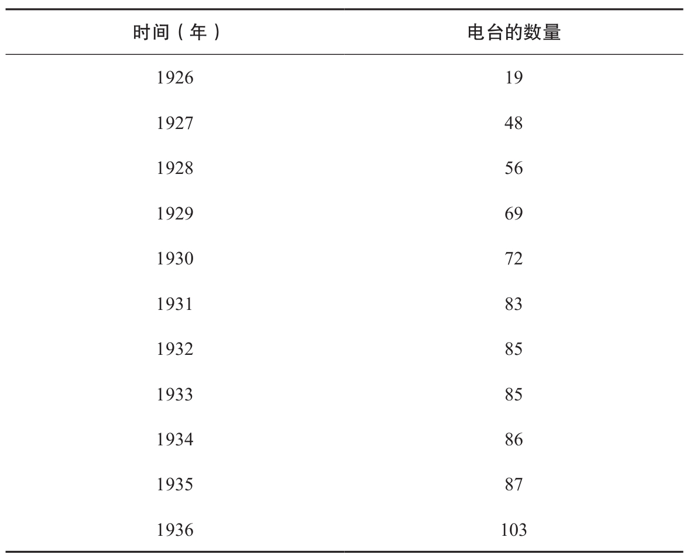
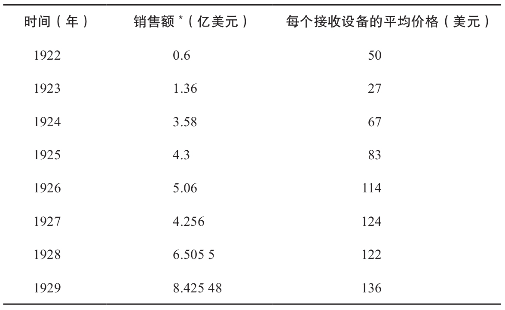

发报机，接收着好的消息。无线电迷，宣告着全新的世界。
——《无线电爱好者》
在1901年一个下着暴风雨的日子，一位年轻的意大利发明家正在纽芬兰放风筝。诚然，那不是普通的风筝，这个叫作古列尔莫·马可尼的年轻人放风筝也不是为了娱乐。马可尼实际上是在努力接收字母s的微弱信号，这个信号由莫尔斯电码中的三个点组成，是从坐落在近2200英里以外的英格兰的一个无线电传送站传送过来的。整整花了4天时间，在经历了一系列的波折之后，这个信号才清晰地抵达。大风不断地吹着，气球在天空中飘动。有好几个小时，马可尼只能听到噪声。直到12月12日这一天，马可尼才捕捉到了三个尖锐的嘀嗒声，没错，这声音就是漂洋过海被无线传送过来的字母s。这是横越海洋的无线电传送的开端，对马可尼无线电报公司这个20世纪早期最重要的公司之一来说，这也是一个转折点。
在马可尼的时代，无线电技术是一项有革命意义的技术。它对于时间和空间产生的戏剧性影响并不亚于电报，无线电技术也具有在很长的距离之间传递信息的功能，运用它可以搭建一个崭新的传播媒介。任何人都可以像马可尼一样，一个人在海边（悬崖边、平原上都可以）运用无线电技术通过空气发送看不见的信息。无线电技术不需要交错的电线，也无须大量的基础设施或者中介工具，它仅仅是信号而已，可以不受任何阻碍地传播几十、几百甚至几千英里。有了无线电技术，通话可以很快地从地球传送到自由空间，根本不像电报技术那样受仪器设备、大量规则和资金的限制。有了无线电技术，谈话由于充满着浪漫和科学味道而让人陶醉：看不见的电磁波，紧紧地抓住了听众的想象力，即使是发明它的那些专家们也为之痴迷不已。
最终，真正让无线电技术强大起来的是它所具有的功能，它可以向广大不受限制的听众发送同一个信息——这是它固有的能力。运用电报和电话，交流还是受限制的、它只能是一件私人的事情。信号通过固定的电线从一端传到另外一端，这样发送者和接收者就只能分别在两边接收信息。有了无线电技术，就可以不依赖这种电线，听众也就可以增多了。任何人只要想收听都可以很容易地接收到这些免费的信息。这也是广播的最早、最简单的阶段，设计它是用来传播声音的。在以后运用别的手段，收听广播是由人们来选择做的事情。例如，演讲的人只能对聚集在下面的听众慷慨陈词，报纸也是有选择地将信息卖给大众，而不仅仅是订阅报纸的那些人。虽然有了无线电技术，但是广播还是被做了技术性的限定。一旦信号被发送到空中，发送者就不可能有任何有效的方法去控制可以接收这些信号的人。这些信号就在空中，任何人都可以完全依据自己的喜好，自由地利用工具去接收它。
这个技术上的特点产生了极其广泛的影响。起初在商业上，它是让人愤怒的，因为它有效地将原先是保持隐私的信息公开化。人们怎么能通过传播大家都可以听到的信息赚钱呢？公司怎么从不受限制也不用付费的客户那里谋取利益呢？在无线电时代的早期，没人知道这些问题的答案。1899年《电学世界》杂志上的一篇文章这样描述道：
不需要电线的电报技术——这听起来多么吸引人……一个小到可以揣在兜里随身携带的设备，当然还安装了一个精巧的手柄，如果你的同伴也有同样的装备的话，你就几乎可以在任何地方任何时刻捕捉到他的信号并且同他通话，不需要任何媒介，只需要空气……但是这一切需要付费吗？不需要！
与此同时，广播在政治上面临着更坏的遭遇。突然间，人们可以完全不顾国家的利益使信息跨越国界公开传播。突然间，信息成了免费的东西，至少对于那些试图控制信息的人来说，这是可怕的。虽然像马可尼这样的先驱者在技术上取得了突破，但是对于那些刚刚认识到大众传播的战略重要性的政府来说，这可是一个噩梦。因为无线电技术，就像互联网一样，实质上是一种有颠覆意义的技术。
意料之中的是，政府很早就盯上了无线电行业，而且还介入其中。与航海和电报技术不同，政府没有在基本的商业模式形成之后才介入其中，它对无线电行业的几次管制如同狂风暴雨般猛烈。政府在无线电技术行业的形成初期就扮演着重要的角色，并一直探索把这个新的技术转化为军用设备的办法。政府为此向那些有这种能力的人提供了大量资金并通过他们将无线电技术广泛应用于第一次世界大战。战争结束后，政府又赶紧转向对和平时期无线电应用的控制。这段时期，大多数的私营企业要么被迫转向海事服务，要么退出无线电行业。幸存下来的这些无线电企业，如马可尼无线电报公司和德国德律风根公司，都成长为商业巨人。但它们像西联公司一样，由于垄断经营而不断招惹麻烦。和平时期的到来，使无线电技术的商业应用出现了新一轮的热潮，这段时间技术不断得到更新，并且萌生出一个新的念头，即运用无线电技术传播音乐和新闻，而不仅仅是信息。
然而，这些新的先驱者还没来得及逃脱政府的审查或者政府各种各样的监管，新的关于制定正式规则的风波就出现了，使这段时间社会问题总是与商业问题搅在一起。社会问题上，电报同六分仪和电话一样，都有自己的局限性。虽然它能够很快地将信息传送到很远的地方，但是在一个规定的时间里，它只能被无情地限制在两个人身上。相反，无线电技术在功用上更接近印刷机和互联网：它的进入成本很低，没有明确的财产所有权（至少最初是这样），可以让几千英里外数以万计的听众一起收听同样的信息。这是一个最简单、最让人舒服的大众媒介。同时它也因触及国家安全而得罪政府。因此在20世纪20年代，就在无线电广播在技术上刚刚可行的时候，欧洲的许多政府赶紧出来限制这个行业的增长，并且使它们转向为国家服务。在制定出许多规则，实行了各种管制之后，欧洲的无线电变成了一个稳定的由政府运营的行业。
相反，在美国，无线电仍然为私人所有。在20世纪20年代先驱们对无线电波趋之若鹜，运用出现的新技术不断探索各种各样的商业模式。在那个时代，无线电技术是最新、最热的市场，它为创业者提供平台，进行各种各样的试验。可是很快，问题变得越来越严重。太多的开发者瞄准了自由空间，各种各样的电波很快就掺和在一起变成刺耳的噪声。广播不能顺利地传给听众，听众也不能收听到他们喜爱的节目，整个系统充满着尖厉刺耳和时断时续的噪声。为了解决问题，私营公司刚开始极不情愿，但最后也只能是失望地求助于政府部门，政府靠制定规则和裁决财产所有权打破了电波的混乱状态，对其进行规范管理。这就是20世纪30年代的无线电业的状况。
无线电技术的发展过程跟电报技术和远洋贸易有着很大的不同。从无序经营到有序经营的过程中，无线电的发展受到的直接引导很少，更缺少一个明确的实体来制定私人经营标准和引导合作。但是它们所经历的冲击是一样的。就像伊卡洛斯（Icarus），成功将电波传上天空的无线电先驱们很自信，相信技术的发展可以使他们避开政治和商业的束缚。他们辉煌了一段时间，走在技术的前沿，从新的无序的市场中获取回报。但是最终规则还是出台了：专利权用来保护无线电通信的核心技术，反托拉斯法旨在在那些有垄断性质的行业中保持竞争，产权所有制度用来限定一个私人电台允许发送的无线电波段和频率。这些规则中的多数是用来帮助那些已经进入无线电行业的公司巩固自己的地位的，有些规则甚至是行业内部自己制定的。所有的这些，都会被生活在马可尼的时代的观察者认为是不可思议的，因为他们把无线电行业从天上又拉回到了地面。
马可尼和他的发明
1896年，一个年轻的意大利发明家来到了英国。他的名字叫作古列尔莫·马可尼。他随身携带着一个小黑盒子，他称它为无线发报机。按照马可尼的说法，“无线”就是指不需要电线的发报机。它只需要空气就可以把信息传送到数英里远的地方。数月之前，马可尼就向意大利政府的代表们介绍过他的发明，但是他们根本不感兴趣。因此，他来到英国，希望得到热烈一点儿的反应。刚开始情况并不好。当马可尼长途跋涉来到英国，一个过分热心的海关官员抓住他的机器并把它摔坏在地上，理由是任何能够背着政府传递信息的设备在本质上都是很危险的。所以，马可尼离开了英国，到别的地方重新尝试。这就是无线电时代的开端。
不管危险与否，都没有足够的证据来说明马可尼的设备是先进的，或者说是有创造性的。实际上，马可尼如同他之前的莫尔斯一样，与其说是一个科学家，还不如说是一个修补工匠。他是一个业余爱好者，在别人的工作和研究成果的基础上偶有所得。数十年，甚至是数个世纪以来，科学家和哲学家们都在探索“以太”是否存在，它是一种外空间的物质，包围着别的物质，并且可以用来解释许多物理现象，如光和磁。19世纪20年代末期，电磁感应的发现将这种研究向前推进了一步，引发了科学家们关于电脉冲可以在空中无形地传送的争论：作用于一根导线的磁力变化可以激发下一个不相连的导线发生相同的变化。这个假设在1865年达到顶峰，因为这时候一位苏格兰数学家詹姆斯·克拉克·麦克斯韦（James Clerk Maxwell）严谨地证明了电和光都可以以同等速度的波在空气即“以太”中传播。麦克斯韦没有确认这些波，也没能发现它们，但是他指出至少在理论上讲，这些波是存在的。在接下来的20年内，全世界的物理学家都试图捕捉到麦克斯韦所说的波，试图制造或者发现他所描述的现象。最后，一个名叫海因里希·鲁道夫·赫兹的德国科学家在1887年成功地用物理方法演示出了麦克斯韦用数学方法说明的现象。在波恩的实验室里，赫兹将一个线圈的两端连接到一个小放电器的相反两面，接着他输送高压电火花穿过这个放电器。这在19世纪80年代简单易懂，因为许多科学家已经成功演示了电穿过放电器的能力。然而，赫兹却发现随着电火花在导线间穿梭，一个更小、小到只有1毫米长的火花，以同样的结构悬浮在房间的另一端，在另外两根导线间闪耀，同时大的电火花以某种方式在向小火花辐射能量。赫兹猜测这就是麦克斯韦所描述的电磁波。
赫兹的发现无论对科学界还是企业界都是很重要的。对于科学界而言，这是一个重要的突破，它证明了麦克斯韦的理论，同时也证明了在“以太”中悬浮着一个波的世界。对于企业界而言，它明显意味着将会产生一个新的通信手段和一种新的发送电报信息的方式，它克服了电报的许多麻烦和铺设电缆网的高成本。然而，即使许多企业家试图在19世纪后期发明无线电报，可是没有一个人能够很快地将赫兹的试验成功转入实际应用。最后这个荣誉降临到了马可尼这个受过很少相关教育的意大利人身上，他在1887年甚至还没有听说过无线电或者麦克斯韦波。
1887年的马可尼还是一个13岁的无名少年，他的父亲是一个富有的意大利人，母亲是爱尔兰人。当马可尼对科学和音乐表现出兴趣的时候，他其实没有正式学过其中的任何一门课程，甚至没有得到博洛尼亚大学的录取通知书。老马可尼对于儿子的不专心很生气，决定让他从事家族的纺织生意。但是，马可尼夫人却有着不同的看法。生于爱尔兰显赫的威士忌家族的安娜·马可尼太太很欣赏儿子对科学的兴趣，于是决定帮助他提高科学知识水平。用尽各种办法，马可尼太太最终说服了奥古斯托·里吉（Augusto Righi）——博洛尼亚大学一位著名的物理学教授，允许小马可尼去听他的课，并且可以使用大学实验室的仪器设备。里吉对他的学生根本没有兴趣，不过为了让安娜高兴，他只能这样做。
1894年，赫兹英年早逝，留下许多科学荣誉和一系列科学发现。这些发现在若干年，甚至是几十年之后才得以转入实际应用。马可尼当时只有20岁，开始为赫兹的工作痴迷，决定在此基础上组装出一个无线发报机。在家里的阁楼上，他照搬了赫兹曾经建起的线圈和放电器。在赫兹的接收器上（那个小的火花放电器），马可尼加了一个设备，名为布朗利粉末检波器：一个铜管两边各有一个电接头，中间悬浮着金属粉末。爱德华·布兰利（Edouard Branly）在1891年发明这种检波器，用来放大从发射器（大的开始的火花放电器）发射到接收器上的能量。最后，马可尼将检波器连到一个电池上，再将电池连到一个莫尔斯印字机上。这样，一个无线电报机的雏形就诞生了，它能通过发射器将信息以电波的形式发出，经过大气传送到接收器上。
第一次试验，马可尼的无线电报机就完成了工作。信号能够传送到接收器上，接收器也可以将脉冲波转化为莫尔斯电码中的点和线。可它不能很快地进行工作。所以，马可尼在他的阁楼里想办法改进它，尝试更换检波器中的金属粉末和不同种类的电接头。慢慢地，在纯属偶然的情况下，马可尼发现用掺有银的镍来做检波器可以达到最好的效果，铂线用来做接头最合适。到1895年夏天，马可尼已经把实验室搬出了阁楼，移到院子的地下，他增大用来做火花放电器和检波器的金属板，并将其中一个金属板高高悬在地面之上，发射距离很快便达到了一公里。
需要重新申明的是，马可尼这时的“无线装备”还算不上真正的新发明。俄国一个叫作亚历山大·斯捷潘诺维奇·波波夫（Alexander Stepanovich Popov）的著名科学家在1895年就已经组装了相同的设备，西方的许多发明家也已经组装出了马可尼设备中的零件及检波器、接收器和打印机。因此，马可尼的无线设备本质上并没有科学上的突破，更没有一点儿天才的创造。马可尼的无线装备跟其他竞争对手的主要不同点在于他把所有的东西装备在一起，使它前进了一小步，更确切地说，他指出了怎样去卖掉它。即使说马可尼不是无线电的真正发明者，却可以说他发明了开拓市场的办法，从长远利益来看，这被证明是同等重要的。
在马可尼眼中，无线电技术有两个最大的优点：第一，很明显，它无须使用电线，可以在海上使用。在情理上，无线电技术的客户应该是政府，它们可以用这个技术来降低对海底电缆的依赖，还可以跟海军舰队通话。在19世纪的最后10年，这些需求显得尤为实际。因为那个时候，英国慢慢地获得了对世界上电缆的控制权，欧洲各国的关系变得越来越紧张。因此，马可尼来到意大利当权者那儿，游说他们为他的无线电计划投资。遭到反对之后，马可尼来到英国这个对航海有着浓厚兴趣的国家，这个对当时国际海运起支配作用的国家。在那里，马可尼开始和母亲的家族有了利益上的往来。
马可尼在海关的不幸遭遇，引起了他母亲的堂哥亨利·詹姆森·戴维斯（Henry Jameson Davis）的注意。他是一个在詹姆斯威士忌家族当中地位显赫的人。詹姆森·戴维斯把年轻的马可尼拉到他的旗下，帮助他改进设备，与专利局取得联系，还为他的成果安排了公共演示。在一系列活动之后，詹姆森·戴维斯推荐马可尼去见另外一个科学家坎贝尔·斯温顿（Campbell Swinton）。坎贝尔被深深地打动了，以致他为此写信给英国邮政局的首席技术专家威廉·普里斯（William Preece）。这次接触被证明是马可尼和接下来的无线电技术发展的一个转折点。
普里斯十分熟悉无线电信技术的作用和结构。像马可尼一样，他也痴迷于同样的现象，曾经不断改进赫兹波在实际中的应用。1892年，他成功地完成了发送信息使之穿过三英里长的布里斯托尔海峡的试验。凭借独特的科学嗅觉，普里斯立即发现了马可尼系统的优越性。正如他在1897年的一次采访中回忆的那样：
虽然我不能说马可尼发现了绝对新的东西，但是我们必须认识到，正如哥伦布没有发明鸡蛋，但是他告诉了人们怎样让鸡蛋以末端站立起来，马可尼告诉人们怎样应用赫兹波和布朗利检波器。他制作了一种新的系统，比所有别的电报系统都要微妙，它使信号可以到达迄今为止还不能到达的地方。
普里斯建议马可尼在自己的实验室中进行多次测试。当这些测试都获得成功之后，普里斯说服他的上级允许马可尼就他的发明以邮政局的名义举行一次公开演示。这一切就发生在马可尼到达英国之后的数月，离他第一次阅读到赫兹的实验内容仅两年。1896年7月27日，马可尼站在拥挤的观众面前，成功地将一个信号从坐落在圣马丁大街的邮政局大楼传送到了大约有一英里远的维多利亚女王大街。两个月之后，他的信号穿过了索尔兹伯里平原，传送距离达到了1.75英里，6个月之后他又当众传送了一个信号，传送距离超过4.5英里。就在这个月，即1897年的3月，马可尼获得了“电脉冲和信号发射的改良”专利权。
这个时候，23岁的马可尼成了一个明星。他在伦敦被尊称为“无线电魔术师”，当他返回在罗马的家时受到了功臣般的待遇。他说服了意大利海军把他的机器用在他们的船上。接下来，在1897年7月，马可尼投资10万英镑（大部分的钱来自家人和朋友）成立了无线电报和信号公司，由詹姆森·戴维斯担任经理。他继续和英国邮政局、战争局和海军舰队保持紧密的合作关系。
与此同时，或者是巧合，也有可能是天生的，马可尼表现出了他的商业天才。在1898年，马可尼为《都柏林每日快报》报道了广受欢迎的金斯顿赛舟会。当时，他航行在一艘叫作“飞扬号”的船上，向报社办公室发送最新的消息。公众对这些看不见的信号如此痴迷却又不解，以至另外一份爱尔兰报纸《晚间邮报》为马可尼的报道发行了一份48版的增刊，随后又将它译为意大利语。这之后不久，马可尼获得了另外一项成功，他为年迈的维多利亚女王安装了一个私人无线电台，这样她就可以随时和她的儿子威尔士亲王爱德华七世联系，当时爱德华七世由于膝盖受伤，正在王室的一艘游艇上恢复。很明显，女王被深深地感动了。当马可尼1899年航行到纽约时，他被看作一个英雄。他的无线电技术在美洲杯帆船赛报道中的应用被《纽约先驱报》描述为：“新闻史上空前的创举……这不仅仅是对科学的恩惠，而且是对那些数以百万想知道比赛结果的人们的恩惠，它使这次比赛比美洲杯历史上任何一次比赛都更加让人激动、更加有趣味。”一向严肃的《纽约时报》甚至描述道：“（它）让我们的语言插上翅膀飞翔。”这一切都发生在马可尼离开父母的阁楼仅仅5年之后。
商业上，虽然马可尼有比较深厚的背景，虽然他的公司在1899年签订了给意大利海军和英国陆军部装配无线电设备的合同，但是由于这些合同缺乏一定的信用保证，它们给马可尼的商业关系蒙上了一层阴影。实际上，马可尼发现在他自己的商业战略中正暗暗地受到政治因素的牵制。他提供给政府的是一种在他看来主要为公用事业服务的形象：和航海的船只进行联系的能力，在长距离间进行通话，打破对外国人所拥有的光缆的依赖。但是，马可尼想从这些服务中获得报酬，而且金融很高：每安装一个电台收费为100英镑，外加每年100英镑的专利权使用费。在19世纪末期的欧洲，这是让人感觉不舒服的商业往来关系。在欧洲大陆，这被看作英国权力的另一种形式的扩展（因为马可尼在这个时候被看作一个英国人）。在英国，这被看作对人民的冒犯，因为马可尼是从邮政局发家的，但是他却很快为私营公司谋取福利，这对于大部分人来说是不可原谅的。
在一段时间内，在马可尼商业经营的表象下，这些愤恨只是在简单地累积。但是接下来，政治利益开始慢慢干涉马可尼的商业地位。在马可尼公司剩下的日子中，这一直是给他制造麻烦的东西。
刚开始时，威胁来自竞争体系——有许多公司成立，并公开与马可尼竞争。他们经常以国家资金为后盾，并且用马可尼已经申明归自己所有的技术作为基础。这些公司中最有潜力的一家是在德国，其创始人是一个叫作阿道夫·斯拉比（Adolph Slaby）的电学研究者，他在1899年造出了和马可尼类似的无线电系统。斯拉比曾经目睹了马可尼在索尔兹伯里平原上的演示，公开表明他对马可尼的褒贬。他后来回忆道：
在1897年1月，当马可尼第一次成功的新闻席卷报纸的时候，我当时也在为同样的问题苦思。我通过空气发送的信号还未超过100米。我立刻明白马可尼一定是把其他新东西加到已知的设备上来，这样的话他发送的距离就可以以千米计。很快，我就决定去英国，那儿的电报局正在做实验……事实上，我确实看见了十分新的东西。
在斯拉比和马可尼建立一种伙伴关系的建议失败之后，这个德国人没有灰心，他成立了自己的一家公司（以政府的资金为后盾），直接和马可尼竞争。1898年斯拉比联合一个德国贵族冯·阿尔科伯爵（Count von Arco），和一个有领先地位的德国电力公司AEG，组成了Slaby-Arco-AEG公司。几年之后，卡尔·费迪南德·布劳恩（Karl Ferdinand Braun）的Braun-Siemens-Halske公司加盟，组成了强大的Gesellschaft für drahtlose Telegraphie公司，也就是广为人知的德律风根公司。与此同时，俄国在亚历山大·波波夫的研究基础之上也建立了自己的系统。在法国，以前制造科学仪器的尤金·杜克勒泰（Eugene Ducretet）也组装了一套设备。因此，到1900年，由于欧洲国家海军紧张状态的升级，出现了4种相互竞争的无线电系统，没有任何一个能够完全与其他系统兼容，其中的3家则直接和马可尼进行竞争。
以国家为基础的竞争也影响着马可尼和其他非军事客户之间的关系。例如，在英国，马可尼最大、最明显的目标之一是伦敦的劳埃德，一个由航海保险公司组成的巨大的联合会。劳埃德要与许多的船只随时保持联系，而马可尼想在尽可能多的船只上安装自己的设备以获取经济利益。两者是完美的匹配。因此，早在1897年，劳埃德就开始对马可尼的技术进行测试。当德国人的系统也可以用的时候，劳埃德对之也进行了同样的测试，结果发现它比马可尼的系统有许多优越的地方。最后，虽然他还是和马可尼签订了合约，但是这都是一系列敌意氛围不断升级的谈判协商之后的结果，甚至有一次，劳埃德威胁说要开发自己的无线电系统。
与此同时，英国政府甚至开始干涉马可尼的价格要求和潜在的控制能力。在海军总部，政策制定者开始认为马可尼的价格过高，难以接受；在邮政局，官员们开始酝酿对无线电进行垄断经营的构思，并且偷偷让两个资深的物理学家获取一些马可尼专利中的东西。为什么对于一个刚刚被当作功臣祝贺的人会面临这样的敌意呢？部分原因可能仅仅是因为贪婪：人们认为马可尼的设备收费太高，他的同伙在谈判过程中有一种不切实际地抬价的趋势。就像一个公司的官员所抱怨的那样：“只要经理们发现他们的报价对方可以接受，并且人们开始准备签约的时候，他们就会强加一些新的条件试图提高价格。”他特别指出，“（这）损害了我们的利益。”一部分敌意也可能是因为在制定价格方面和在协调马可尼的商业利益和政府公共目的差异方面存在着困难。至少在英国，马可尼事实上是一个垄断主义者。他拥有所有的核心技术专利，还有和主要客户紧密的关系。但是，由于他的企业涉及公共服务领域，英国政府不允许他由于垄断而获利。毕竟，英国的邮政服务是公共服务，电报局也是这样。马可尼试图通过新的通话模式来赚钱，英国的政策制定者当然不高兴。
但是，没有一个政策制定者想在专利权和可能实现的无线电国有化方面打持久战。因此，他们与马可尼保持着不冷不热的关系，并且继续购买他的设备。在1900年，英国海军2/3的无线设备都是从马可尼公司购买的，也是在这一年，这家公司更名为马可尼无线电报公司。
从设备发明到垄断经营
在世纪之交，马可尼已经成功地从一个发明家转变成一个企业家。他因为强大的技术实力和商业洞察力而闻名全世界。在不到10年的时间内，他不仅创造了一项新的技术，而且开辟了一个新的市场。通过向政府和私营企业出售通信设备，马可尼证明了赫兹电磁波的商业价值。如果需要的话，不断升级的竞争就是证据：德律风根、波波夫还有其他的人都想在无线电市场争取到自己的份额。这就是无线电第一阶段的狂热和扩张，一个记者这样预测道：“电缆线可能要捆起来当作废铁来买了。”初生的美国无线电公司吸引着许多激情四射的投资者的视线。
对马可尼来说，这个时期也是充满着商业不确定性的时期。他知道人们对无线电有着技术的需求，他也能够满足这些需求，但是他还是对正在形成的这种商业模式，或者是对被他吸引来的那些客户感到不舒服。毕竟，这些客户中的大部分都是像英国海军这样的巨头，它们和政府有着紧密的联系，它们对马可尼索要的价格越来越敏感。而且，客户中的大多数已经对马可尼的权力感到不满，因此都在积极地寻找别的途径获得或者制造类似于马可尼的系统。技术上，马可尼有着稳固的地位。他在无线电行业有着与众不同的技术优势，同时控制着主要的技术专利权；实际上，在1900年他通过取得调谐装置的专利权而巩固了这种优势，这是一个可以让接收者选择特殊信号或者电台的发明。但是，这些对于建立一个商业王国来说还是微不足道的，尤其当他的许多专利权具有争议，并且大部分都被广泛地复制之后。
因此，马可尼和他的合伙人开始寻找其他更加稳定、更少有非议的方法来组织自己的企业。最后，他们采取了一系列美国电话电报公司曾经在美国电话市场上采取的办法，这也是几十年之后，IBM（国际商业机器公司）和施乐比较喜欢采取的方法。实际上这是一种租赁的模式，马可尼将设备租给客户，同时收取为这些设备提供服务的费用。这种模式的好处就是客户不需要筹集资金购买昂贵的设备，或者不需要培训自己的人去使用它。在这种模式下，客户同意在一段固定的时间内（通常很长）使用马可尼的无线设备。他们将每年付给马可尼无线电报公司1万英镑的专利使用费，同意从同样装有马可尼无线设备的船上接收信息，并且保证不与未装有同样设备的其他船只通话（紧急情况除外）。作为交换，马可尼为他的每个客户派送一个马可尼公司培训过的操作员和更为广阔的通信网络。同时，他运用这些船和地面的基础设施以降低价格和完成穿越大西洋通信来与电报公司竞争。这是标准化的经典模式，也是一种规模经济，在这种情况下海军通信就变得更加强大：如果在马可尼网络中的一艘船开始下沉，他的操作员工可以立即在广阔的网络中发送求救信息，很快信息就能够传给所有的地面操作员工，任何附近装有同样马可尼设备的船都可以接收到信息。系统中这样的船只越多，单艘船只就会感到越安全。
很明显，马可尼的网络如果继续下去必然会导致垄断经营。为了加入这个网络，客户必须使用马可尼的设备。即使别的公司提供更先进的技术或者更优越的条件，他们也必须与马可尼合作。因为他们已经同意，不是在紧急的情况下不和“外人”，即那些装有非马可尼设备的船只通话。据马可尼称，这一规则仅仅是出于技术需要，是一种防止不兼容的信号干扰安装好的设备的方法。马可尼解释道：“马可尼公司的规定就是不能支持识别其他系统……我们不希望我们的系统受到伤害。如果我们允许这些电台与装有我们设备的装置或电台通话的话，就会造成伤害。”也许是这样吧。但所谓的“不干扰”也只是一种强硬的竞争工具：一旦马可尼的网络达到了相当大的规模，系统外的任何人都将受到惩罚。这就是网络和标准的力量。到1900年，马可尼公司和好几家轮船公司都签订了协议，为意大利和英国的舰队安装自己的设备。这之后不久，他和英国的劳埃德签订了长达14年的合作协议。
1900年10月，马可尼开始转向巩固自己的技术地位，以证明无线电技术在为越洋通信服务上可以和海底光缆进行竞争。他在英国康沃尔海岸边一个荒凉的峡谷波尔杜和科德角的韦尔弗利特取得了土地。他在每个地方都竖起了20根巨大的杆子，每根都有200英尺高，交错着总共400根电线。建好仅仅数月，两场台风毁坏了所有的杆子，5万英镑的投资化为乌有。然而，马可尼没有放弃。他重新在波尔杜建起了电台，还在纽芬兰的圣约翰斯建起了另外一个电台。他还开始用气球和风筝作为更灵活、更便宜的接收器来做实验。最后，在1901年12月12日，马可尼听到了穿过大西洋传送过来的字母“s”的信号——莫尔斯电码中的三个点。这是电波第一次传送得这么远。它意味着马可尼现在可以建成一个遍布全球的无线电网络。
可是这个时候，马可尼在技术上的成功，加剧了政治因素的反应。虽然加拿大在1902年准备购买马可尼的一套新设备，但美国政府还是保持着警惕，德国政府则尤为愤恨，他们认为马可尼的网络系统是英国试图扩展海运和通信帝国的一个阴谋。1903年，麻烦事来了，德皇威廉二世（Kaiser Wilhelm II）的弟弟亨利王子（Prince Henry，多称海因里希亲王）乘一艘装有斯拉比无线电系统的德国轮船“德意志号”从美国航行到德国。在航行中，王子注意到他的船没有接收到信息，他把这理解为是马可尼的系统故意在阻断信号。这种臆断本没有什么可以关注的，但是对德皇而言已足够重大了。这件事在德国掀起了一股浪潮，当时的一位作家这样描述道：“马可尼恶意的恐吓……引起了加快光缆本土化的呼声……以至于美国人几乎和欧洲大众一起为惨淡的前景而担忧，资深的教授、贵族和其他各种各样类似的特殊人物满怀愤怒地大声疾呼着。”威廉二世在弟弟回来后不久，就用无线电召开了一次国际会议。会议的正式目的是声明将把电报方面已经存在的规则和管制应用于无线电领域。非正式的目的就是要打破马可尼的垄断。
1903年8月4日，世界上的主要国家在柏林碰头。它们指责不加干涉的政策和“马可尼主义”，最后它们签订了明确的，但没有权威性的文件。在首次柏林会议的最后协议中，参加会议的9个国家中，有7个国家同意“海岸电台应该用来为航行在海上的所有船只提供发送和接收电报的服务，不管它们使用的是什么无线电系统”。换句话说，就是不存在不可以通话的政策，不像马可尼那样试图忽略由其他系统发送的信号。但是，由于英国和意大利拒绝在协议上签字，所以马可尼没有必须遵从的压力。因此，当德国代表团谴责英国政府想通过马可尼公司在无线通信方面获得特殊的英国垄断时，英国政府反驳说马可尼公司没有义务一定去帮助他的竞争对手。
但是，即使在英国内部，对于马可尼权力的担忧也在不断升级。1904年，一份秘密的备忘录提醒内阁注意英国在柏林会议上的孤立状态，并且写道：“如果我们想加入国际合约，就必须强制进行信息交换，以避免干涉。”英国的邮政局永远也不能原谅马可尼最初向私营公司的转化，在他们的领导下，高层官员开始提出无线电技术就应该像邮政和电报一样，要取得经营许可权，而且应该由国家控制的建议。因此，1906年英国代表团参加第二届国际无线电会议的时候，在德国人最初提出的看法经过些许修改之后形成的文件上签了字：从那之后，每一个公共的无线电台都必须“和每一个装配无线电设备的船只交换无线电信息，反过来也一样，而不管他们所使用的是哪种无线电系统”。换句话说，这时再不进行干涉是不合法的，这意味着马可尼的商业模式必须改变。三年之后，英国的邮政局采用了最后一招，买下了马可尼的所有沿海无线电台。一个美国海军代表心满意足地说：“马可尼公司虽然没死，但是元气大伤。”
回顾历史，马可尼垄断的故事是很有趣的。他的扩张历史不超过10年，还算不上真正的垄断者。对马可尼的技术和公司来说，总是有很多残酷的竞争者（尤其是德律风根公司）。马可尼从来没有真正赢利过：1906年公司的毛利只有55170美元，他在美国的经营直到1910年才赢利。那么，为什么马可尼如此让人害怕呢？为什么他的公司招致了如此多的政府的敌意呢？也许是对马可尼个人地位的上升和才能的一种过热反映。毕竟，他是一个宣传天才，总是试图让他的王国显示得比实际更强大。也许仅仅是由于那个时代的特征，一种对于像标准石油和西联这样的公司的本能反应。但是，在马可尼案例中更多的好像是私人因素和政治因素。马可尼从一开始就是一个优秀的先驱：一个有野心的年轻发明家，他不能容忍任何东西阻碍他的工作，反对他的计划。他发明了无线电技术（或者最起码是将别人的创造转化为可应用的形式），接下来创造并且控制了市场。这是一个在技术领域争取地位的、经典的、有巨大价值的案例。
但是，问题是马可尼所要争取的东西太大、太有价值，尤其是在如此具有军事重要性的一个行业中。一旦无线电市场变得像马可尼自己所想象的那样庞大和重要时，政府就会不愿意放弃对它的控制。因此就会专门制定规则来阻止马克尼。到1909年，英国政府购买了马可尼在英国的所有连接船只和海岸的电台，总共只用了75000美元就夺取了无线电生意中的一大块份额。可笑的是，同年马可尼和他一直以来的竞争对手费迪南德·布劳恩（Ferdinand Braun）一起获得了诺贝尔物理学奖。
第一次世界大战和国家主义的干涉
当第一次世界大战席卷欧洲的时候，无线电技术几乎已经全部政治化了。在德国，无线电被德律风根所控制，它和政府有着紧密的联系并为其提供支持；在英国，无线电技术处于邮政局的严密监视之下；在美国，海军试图垄断所有的无线电通信。在无线电行业依旧有许多私营公司，许多持续不断的发明创造，但是无线电市场依旧为国家利益服务。正如人们所预料的那样，这种联系在战争年代只会更加紧密。
最初，因为电报技术不景气，无线电技术才得以发展。当战争在1914年爆发时，电报依旧是欧洲长途通话的主要模式。有超过10万英里的电报线联系着欧洲大陆和世界其他的地方，还有海底电缆。但是，电报技术易受攻击，传送信息的线路易于被占领。如果一条线路被剪断，所有的系统都会崩溃。因此交战国很快开始相互破坏系统，尤其是破坏那些易于被发现、很容易毁坏的海底电缆。1914年8月4日，就在英国向德国发出最后通牒的数小时之后，英国的海底电缆敷设船Telconia号从海底拉出了德国的5条海底电缆并将它们破坏掉，一个晚上就切断了德国与外面世界的主要通信系统。到1915年，只剩下很少的线路在起作用，同样，德国也切断了英国与俄国进行联系的波罗的海和黑海的电缆。一旦电缆被拆除或变更，无线电技术自然就成了替代品。
在技术上，无线电是战争中很笨拙的设备。因为没有办法限定信号和引导它的传送，无线电信号从一个地点向另外一个地点广播，任何人都可以听到。无线电的这种透明性在战争的早期被认为是灾难性的，当时俄国的将军萨姆索诺夫（Samsonov）以清晰明了的语言广播了他入侵东普鲁士的计划。德国人听到了一切，在坦嫩贝格的一场大战中调来了10万名囚犯，不幸的萨姆索诺夫只能自杀。其他的军官赶紧学习将他们的命令译成密码。事实上，制造密码和破译密码很快成了战争中的主要任务，这有助于将信息转移给盟国的军队。例如，德国在北大西洋的海军活动屡屡受到“Room40”组织的阻碍，这是一支临时用英国语言学家和数学家紧急组建起来的队伍，专门破译德国公海舰队和其海上船只之间的无线电信息。1918年，德国的一次主要进攻被瓦解，同样是因为一个法国的密码破译家成功地破解了ADFGVX码，这是直到那时为止在战斗中应用的最为复杂的密码。
在1918年战争临近尾声的时候，无线电技术不仅仅被看作一项主要的军用技术，而且是一项主要的保密技术，一种权力的象征和战争的工具。虽然许多欧洲国家没有直接把它们的无线电产业国有化（后来这样做了），但是仍与之保持着亲密的接触，并用保护的眼光将其看作“自己”的无线电公司。在英国，政府继续与马可尼公司保持紧密关系，虽然它对公司的一些很有野心的计划表示了拒绝；在法国，新成立的Compagnie Générale de Télégraphie sans Fil公司（简称CSF公司），横跨广阔的殖民地建立了一系列电台；在德国，德律风根公司依旧是国内所有无线电公司的领头企业，并且继续和政治有着紧密的联系。
即使是在美国，从1902年美国海军进行无线电技术试验起，政府一直起着决定性的作用。它从斯拉比–阿尔科和一系列的美国公司那儿购买设备（美国政府坚决不和马可尼做生意），并把无线电设备安装到其中的好几艘船上。1912年，美国政府获得国会的支持，加大了介入无线电活动的力度，建立起的一系列大功率的电台遍布其不断扩展的海外版图：菲律宾、波多黎各、关岛和萨摩亚群岛。即使是在这个时候，海军实际上还在不断地对技术进行着摸索。大多数老军官们基本上还是反对无线电技术的应用，因为他们认为它限制了舰船权威的发挥；大多数重要的美国发明家，像李·德福雷斯特（Lee De Forest），西里尔·埃尔韦尔（Cyril Elwell）和雷金纳德·费森登（Reginald Fessenden）要么破产，要么早早地与海军中断了合作关系。
但是，战争结束之后，海军很快改变了它的态度，积极介入无线电技术和无线电业务。这是对于美国广播政策即将出台的一个主要暗示，实际上，也是对于无线电发展史的暗示。
美国无线电公司（RCA）的诞生
1918年，美国海军发现自己对于无线电技术有着军事需求。在战争的早期，美国只有三个夺过来的外国电台，到1917年已有53个美国电台。美国海军从联邦电报公司，一个高强度电弧发射器生产商那儿购买设备，同样还购买了375个马可尼电台。在战争期间，美国海军将一系列的专利送到生产商手中，鼓励这些生产商把注意力集中在生产方面，不要顾及其他的义务。
怎样处理这些资产呢？刚开始，海军想把它们控制在自己的手中，想在无线电行业建立起长久的公共垄断。海军部部长约瑟夫斯·丹尼尔斯（Josephus Daniels）坚信“通信是政府的一项职能，政府必须拥有并且控制无线电、航道、电报和电话”，他试图说服犹豫不决的国会让海军对无线电行业拥有长期的垄断地位，但遭到了拒绝。丹尼尔斯和他的同伴在把无线电行业简单地放在市场和个人手中的问题上拒绝让步。他们不想失去美国公司在战争中最终形成的技术，不想失去无线电所带来的保密功能，不想失去对广播的控制，也不想留给马可尼重新进入美国市场的空间。这样，在接下来的数月里，美国海军官员努力制定一个可行的政策——通过某种途径既可以对无线电的发展进行控制，又可以在实际中不把它纳入自己正式的权力中，且不需要直接依靠美国政府却可以发展美国的无线电行业。
在欧洲，政策制定者已经通过公共途径解决了这个两难问题：通过国有化或者公共融资来发展电台。像丹尼尔斯这样的海军官员认为这些办法在美国不起作用。他们需要一些更微妙、更接近市场的东西来满足美国人对于私营企业的那种荣誉感。他们所提出的建议十分复杂并且是保密的。它实施起来需要许多年，而且在许多方面是与美国的法律直接冲突的。但它是十分有创造性的，而且重要的是，它起作用了。
为了了解这个战略逻辑的细微差别，有必要回到战争之前不久的年代，当时许多发明家试图掀起无线电的下一次大浪潮。在这段时间，在美国的实验室、阁楼和毕业生项目中涌现了很多开拓者。他们发表了很多关于电学和无线电方面的理论，当他们的理论偶尔转化为产品的时候，他们就陷入了法律争端之中。借鉴马可尼的故事，一些发明家，像李·德福雷斯特和西里尔·埃尔韦尔等人，到处寻找有雄厚实力的赞助人，急切地想将他们的发明应用在商业市场上。这个时候，像美国电话电报公司和西屋电气公司这样的行业巨人都涉足了无线电行业，它们开发了许多新的技术，取得了从内部培育起来的商业所有权。
这一轮发明浪潮的不同之处在于它对连续波的痴狂，还有由此而带来的对马可尼的火花放电器技术的藐视。到这个时候，几乎所有的无线电发射技术都是以马可尼的火花放电器技术为基础的，就是通过无线电波发送单独的脉冲能量。这就是最初定义无线电和形成无线电行业的技术。它随着技术的发展成熟而变得普通，新一代的梦想者开始追求更多的东西。尤其是他们想通过某种途径，使通过大气传播的不仅仅是瞬间的电火花，还想传送声音和音乐。换句话说，在他们知道这可能意味着什么之前，他们想要的就是无线电广播。
到20世纪初期，这种传播方式的理论基础已经清晰地形成。渐渐地，一小批创新者认识到如果无线电信号能够传送的东西比莫尔斯电码中的点和线还要多的话，它们就会变得更加特殊和微妙。创新者必须采用更好的可适用频率的频谱进行不间断的传送，或者称为连续波——一种以稳定持续的频率波动的波，而不是采用火花放电器技术传送的不稳定的冲击波。但问题是要产生这种波十分困难，因为在那个时候没有仪器能够生成足够快的电流以激发这种连续波。大多数无线电专家都坚持这是不可能成功的。例如在1906年，那个时候最著名的科学家之一约翰·安布罗斯·弗莱明（John Ambrose Fleming），发表了一篇关于无线电技术的物理基础的综合性文章，坚持认为没有最初的电火花，赫兹波（也就是无线电波）便不可能产生。
但是，新一代的发明家没有放弃。例如在加利福尼亚州，一个年轻的斯坦福大学毕业生西里尔·埃尔韦尔和一个丹麦的发明家一起加入了联邦电报公司，该公司后来利用电弧激发出了早期的连续波。在东海岸，李·德福雷斯特为了不断改进他的三极管已经反复推敲了好几年，这是一种用来检测和放大无线电信号的具有开创性的设备。在西屋电气、通用电气和美国电话电报公司的研发实验室里，科学家们已经开始了解了真空管这种设备，它是一种很快就会变成无线电核心技术的一个很小的检测器。在那个世纪之交，最为重要的研究成果要数200千瓦的交流发电机，它是一个叫作雷金纳德·费森登的加拿大人的杰作，这个人曾经为托马斯·爱迪生工作，后来在匹兹堡大学教授电气工程学。像埃尔韦尔和其他先驱们一样，费森登不承认电火花是传送无线电信号的唯一方法。他想摆脱在他看来逐渐过时的技术，寻求其他能产生稳定而又强大的连续波的途径。凭借毅力和耐心的劝说，他最终说服了通用电气公司尝试建造一个有足够动力的交流发电机来产生真实的持续波。工作进程很缓慢，但是到1906年，通用已经造出了一个10万转速的交流发电机，其功率强大到足够让费森登从他在马萨诸塞州普利茅斯的试验电台传送圣诞前夜的广播。由于受到这个成功的鼓励和传送清晰声音所存在的巨大可能性，通用电气公司全力支持费森登，让他全心全意去迎接挑战，到1914年第一次世界大战爆发的时候，费森登造出了能够将声音传送数千英里的交流发电机。
这项技术的突破将无线电行业带到了商业的十字路口。直到这个时候，无线电技术还仅仅处于“无线”阶段——没有复杂构造的电报，也就是一种传送莫尔斯电码的点和线的新方法。它的主要应用还停留在船对船、船对海岸的通话上，它的主要供应商是马可尼。但是，在交流发电机发明之后，无线电技术变成了一种广播技术——一个传播声音和音乐的新途径，而不是传播电码的尖叫声和哔哔声。在理论上这种传播方式意味着无线电市场将超出传统的船运和海军服务的范围，得到进一步扩展，一个全新的市场将会出现，由于各种不同的原因，无线电技术在地面上将比在海上更有应用价值。
在费森登发明交流发电机的新闻刚开始在无线电领域传播的时候，马可尼对此不屑一顾。马可尼和他的工程师们完全依赖火花放电器技术，拒绝对连续波发表看法，甚至拒绝承认无线电波可以由除火花放电器系统之外的任何东西来产生。而且由于他们的业务仅仅集中在信息方面，所以他们没有传递电码之外的声音的需求，对于费森登的天才发明也没有特殊的需要。因此，像许多早期的开拓者一样，马可尼和他的同伴没有向技术前沿更深地迈进一步。他们认为无线电技术是他们自己的技术，他们侧重于改进现有的系统和业务，却没有想通过其他的东西来取代它。但是最后，有些东西的影响太大了，无法忽视。在1915年，马可尼自己也承认了交流发电机的优点，并且开出高价与通用电气公司接触。以不公开的价格总数作为交换，马可尼将每年购买25台交流发电机，这基本上就是通用电气公司的全部生产量。
当然，这个交易让人好奇的是在背后推动它的战略。在交流发电机诞生之前，无论在法律方面还是在技术方面，无线电都是与马可尼和他的公司相联系的。马可尼是无线电行业无可争议的先驱，是主要专利权的所有者，是市场上无线电服务的主要供应商。以火花放电器技术为基础，他和他的公司开发出一个新的市场，并在此基础上组建了一个商业王国。然而，使他的权力得以实现的技术在1915年由于新一轮的创新而显得黯然失色。如果马可尼想继续保持他的商业地位，他需要取得他没有制造的东西：他必须购买交流发电机并且用他们来取代自己的以火花放电器为基础的发射机。而且，如果马可尼公司想保持在商业上与众不同的风格，就必须保护这些技术以防落入他人之手。因此这些公司给通用电气公司的建议实质上就是通过协商保持垄断。马可尼公司在连续波的世界中将仍处在主导地位，通用电气公司将成为新技术独一无二的供应商，两者都将在无线电转向传播声音的进程中走向辉煌。
如果马可尼早10年实施这个战略的话，也许还能够起作用。但是，马可尼公司在1915年才跟通用电气公司接触，直到1919年才达成了一个暂时的协议——这一切都发生在美国海军已经认识到无线电技术的战略重要性之后好多年。当海军得知马可尼的交易之后，他们几乎要疯了。“如果这次交易成功的话，我能立即感受到巨大的优势将落入外国人之手，”一个官员后来回忆道，“我立即想办法阻止它。”毕竟这是他们最坏的一个噩梦：一个外国人所有的私营公司将永远地处于垄断地位。阻止马可尼和通用电气公司建立合同关系成了海军无线电战略的一个主要部分，也是他们解决无线电问题的关键所在。
在1919年4月8日，两个海军官员威廉·布拉德（William Bullard）上将与斯坦福·C·胡珀（Stanford C.Hooper）少校和通用电气公司的副总裁兼代理律师欧文·D·扬（Owen D.Young）碰面。在激发通用电气公司的爱国热情，同时间接提到来自威尔逊总统的命令后，布拉德和胡珀提出了一个建议：“制定如同门罗主义那样的方针政策，用来把这个国家的无线电控制权保留在美国人手中。”为了说服通用电气公司远离与马可尼签订的获利合同，胡珀为其提出了一个有诱惑性的选择：成立一个新的美国无线电公司，比马可尼的公司更大、更容易获利，而且全部采用美国人拥有的只有通用电气才能够生产的技术。他们怎样来保护必要的专利权呢？很显然，美国海军由于战争的缘故已经拥有它们了。同时，他们怎么让马可尼放弃这个合同呢？通过剥夺他购买通用电气公司的交流发电机的权利，把这些设备都送到新成立的公司那里去。
美国海军战略的核心有一定的讽刺性，并且有一个谬见，至今历史还没有完全给予解释。让美国官员头痛的马可尼公司实际上不是一家外国公司。相反，它是美国马可尼公司——实际上是拥有英国专利权的高度自治的大公司的一个子公司，而这个大公司从来没有真正依靠英国的任何政策。它的几乎所有的官员都是美国人，大部分的业务都集中在美国和北美市场。但是，海军认为美国马可尼也是马可尼，任何形式的马可尼都要予以制止。
数月之后，通用电气公司同意了美国政府的建议。在1919年10月17日，美国无线电有限公司（简称RCA）成立了。它完全是一个私营公司，但是受到几个不同寻常的限制：只有美国的公民能够作为公司的经理或者高级官员，外国人持有的公司股票不能超过20%，一个政府的代表会周期性地提醒董事会关注美国的利益。更加不同寻常的是公司既无资产，也没有经营活动。它所有的东西是美国马可尼公司的股票，即一个月之前从数千愿意以马可尼公司的股票换取新RCA股票的个人那儿购买的。通用电气公司则直接购买了英国马可尼公司所拥有的364826股。
回顾历史，RCA的最后计划与其说是美国海军的杰作，倒不如说是欧文·D·扬的杰作。是扬筹划了新公司的所有细节，并把它呈交至华盛顿；是扬首先提醒美国海军关注通用电气公司和马可尼的交易。但是，扬所提供的正是美国海军所需要的：一个友好的美国私人的垄断。突然间，通用电气公司进入了无线电领域。
数月之内，任何对于RCA来说是阻碍的东西都消除了，这得益于扬的机警操纵和美国海军的大力扶持。RCA接管了政府早期从马可尼那儿购买的无线电电台，接收了几乎所有的马可尼公司的员工——包括很快成为公司主席的戴维·萨尔诺夫（David Sarnoff）。新公司在1920年2月推出了一项国际无线电通信服务，并且很快与别的国家电台签订了独有的交流协议。到1923年，RCA处理了30%横跨大西洋和50%横跨太平洋的通信业务。但是，它最大的生意来自于专利权领域，扬以美国海军为后盾，与美国电话电报公司、联合水果公司和西屋公司签订了实质性的跨公司特许协议。这些公司中的每一个都掌握了好几个无线电方面最核心部分的专利权。例如，有了来自美国马可尼公司的技术，RCA公司有能力生产二极真空管，但是没有生产三极管的技术，而这项技术的专利权归美国电话电报公司所有；同样，美国电话电报公司不能够合法地生产无线电技术所需要的真空管，除非它取得专利权，但是由于与通用电气公司的合作，一切障碍都扫除了，因为通用电气公司正好有生产真空管的专利权进行补充。其他主要专利权（例如电弧光发射机、外差法接收器等）被另外两家公司——西屋公司和联合水果公司所拥有。扬阐述道：如果这些公司各自为政的话，它们将陷入法律问题和技术竞争中，使行业分离，增长受阻。这样对于RCA的发展也是一个很大的障碍，因为它们控制的技术毫无疑问都是RCA所需要的。为了解决这个问题，扬在1920年和1921年主持了一系列的谈判，通过正式地把所有主要的无线电公司纳入RCA的发展轨道，创造了一个专利联盟。在这个协议之下，RCA取得了任何一家其他公司所有的无线电专利权（虽然自己不生产无线电设备），作为回报，它们获得了一大笔RCA的所有权：西屋公司获得20.6%，美国电话电报公司获得了10.3%，联合水果公司获得了4.1%，通用电气公司获得了RCA公司30.1%的股票，仅有34.9%给了中小投资者。通过这些复杂的操纵，美国政府扮演了亲切的“大叔”的角色，和蔼地注视着美国最大、最复杂的公司协力控制、友好划分着无线电市场。财产所有权——在这儿以专利权的形式——愉快地进行着交易，并且以美国的法律名正言顺地受到保护。
这样，就在战争结束5年后，一个新的无线电公司诞生了，如同一个客户所描述的，“垄断经营的罪恶”，从它产生开始，就注定了会比马可尼曾经有的力量更加强大。直到RCA公司建成，美国的无线电业依旧是一个杂乱无章的世界。技术的开拓者们拥有一系列的私营公司（最值得一提的是费森登、德福雷斯特，西里尔·埃尔韦尔），还有几家更大的公司，例如通用电气公司和西屋公司，它们生产一些主要的元件。行业中的唯一的标准和仅有的一套准则来自于马可尼这个决定控制自己所制造的市场的外国人。但是到1923年，马可尼和他的准则被放到了一边，取而代之的是无线电行业中新的游戏规则和新的更加强大的玩家。更微妙的是能够使这些行家得以生存发展的是美国政府和美国行业巨头之间所建立起来的合作链。RCA其实是一个合资企业，虽然很少有人这样描述：有来自于通用电气公司的投资，同时有来自于西屋、美国电话电报公司、西电公司和联合水果公司的资金和技术。最值得一提的是它拥有4000万美元的投资和数百万美元研发费用的支持。最起码在美国，它控制了所有的专利权和所有的让无线电技术获得成功的流程。
回顾历史，可以说马可尼没有被1906年召开的国际无线电会议真正伤害，也没有被1909年英国的国有化风波所冲击。在那个时候，无论是技术上的还是商业上他都有能力继续经营着他的国际海上业务，运营遍布世界的无线电网络。但是到了1923年，他的垄断地位消失了。
无线电爱好者（Radioheads）
RCA的创立对国际无线电行业有深远的影响。它把权力和专利权集于一身，紧紧依靠美国政府和行业中的巨头。但是，它没有根本改变无线电的使用范围。实际上，在RCA公司成立的早期与马可尼公司的早期无线电使用并没有太大的区别。除了能够传送声音这个新的功能之外，它还是用于无线电电报——建立马可尼当年想创立的同样的通信王国，只是这次的传送带着明显不同的美国音调。
改变无线电的不是RCA的诞生，也不是当时欧洲国家无线电台的创立。这些都没有实质性的技术突破，因为20世纪最伟大的进步——真空管、高频率交流发电机和德福雷斯特的三极管——还紧紧地掌握在主要公司或者政府的手中。事实上，真正改变无线电的是业余无线电爱好者的不断增多，他们不断改进技术，深深地爱上了无线电所具有的潜力。这些人——他们被习惯性地称为“男孩”——要么在军队的时候学过无线电技术，要么仅仅是阅读了像《无线电时代》和《电力世界》这样的出版物。运用简陋的设备，他们能够从空中捕捉到任何萦绕在他们周围的信号。这些声音变得越复杂，游戏就越有趣味，他们也越竭尽全力地收听。
这些业余收听在无线电时代的最早期就已经存在了。受到马可尼的朝气和自己动手精神的激发，无线电痴迷者制作了自己的简陋设备，并且成立了无线电俱乐部。他们通过交流建立了早期的电波友谊，并交流各种接收器的使用心得。但是在20世纪早期，无线电爱好者的数量仍然较少。这仅仅是因为无线电技术太复杂以致难以掌握，无线电信号也很难令人产生太大的兴趣——只有莫尔斯电码中的点和线，在空中发出震耳欲聋的叫声和大段大段的静电噪声。
但是，随着费森登和其他人使连续波得到完美传送之后，无线电对听众的技术要求越来越低，听众也越来越多。突然间，天空中充斥着易懂语言的嗡嗡声：任何一个使用者都可以随意收听到语言和音乐。无线电业余爱好者数量的不断增多，点燃了临时社会团体的激情，甚至带来了灰色市场。例如，无线电爱好者发现弹簧可以用来代替火花放电器，圆形的桂格麦片（Quaker Oats）盒子用来做调谐线圈的核心部分最为合适。他们指出怎样使用晶体检波器和偷来的电话听筒，并且与越来越多的爱好者们分享这些发现。就像隐蔽的鸟类观察者一样，他们对接听的东西进行记录，并愿意在他们自制的耳机产生的静电噪声中收听几个小时，就为了捕捉从很远的地方传送过来的某个信号。他们收不到太多的东西，除了一些天气预报和航运信息之外，偶尔能够听到大段的其他操作者抛出的闲话。但是就是这些仅有的发现也使这些收听者激动不已，他们有能力从稀薄的空气中接收信号，能够听到从数百英里远的地方飘过来的声音。据一位作者估计，仅仅是在美国，在1912年的一个晚上就有“10万名男孩”，戴着自制的接收器在等待着信号。
这是公众对无线电充满激情的第二次热潮。与由马可尼引领的第一次热潮不同，这一次少了技术的神秘感和对于发现的恐惧。它不仅仅是那些发明家的事，也不和任何的商业目的相联系。相反，它是一个社会的突破——人们意识到同样的技术可以有不同的用途，产生了许多它的缔造者们不曾想到的观点。无线电不再仅仅是海军工具或传递信息的设备，它突然变成了用来娱乐的媒介——是被享受的东西，而不仅仅是被使用。
这种传递形式隐含着某种定数——一种信念，那就是无线电在技术上要打破权力政府的现有统治。因为天空不在商业和政府的控制之中，无线电预言家们坚信，没有办法对它进行管制或者从中赢利，也没有办法把无线电波据为己有或纳入可控制的行列。他们呼吁，无线电注定应该是免费的，应该像天空自身一样向所有的进入者开放，同样它应该不受传统的财产所有权的阻碍。它应该是民主的工具，既不受大商业的限制，又不受大政府的限制。但是，实际情况根本不是这样。
广播业务
有将近10年，“无线电男孩们”与无线电行业相处融洽。电台发送信息，“无线电男孩们”接收信息。因为技术专家们已经宣称“以太”可以有效地被无限利用，没有人担心他们的存在产生的物理影响。但是，随着使用数量的增多，他们除了收听之外还聊天，很明显，“以太”事实上不再是无限的了，无线电波的堵塞变成了一个十分实际的问题。到1910年，传播突然相互干扰起来，信号因相互干扰，变成了刺耳的声音。“无线电男孩们”根本不在乎这些混乱局面的时候，美国海军和企业却考虑到了，他们谴责无线电痴迷者们造成的这些堵塞。批评人士说，“业余爱好者的噪声”使海军舰队不能与总部通话，有些业余爱好者甚至模仿海军官员，通过无线电波发送错误的命令，制造混乱。1910年发表的一篇文章警告道：“由于许多小的业余电台的存在，美国海军海岸电台的效率降低了一半。”另外一篇文章言辞不那么激烈地抱怨道：“他们在太阳底下闲聊一切……相互询问棒球或橄榄球赛的比分，安排第二天的约会，比较他们的功课，他们以‘男孩们’流行的方式你来我往地争论和探讨着。”“无线电男孩们”从这些抱怨中得到了一种愉快的感觉，他们把自己看作技术的巨大潜力的证明，因为他们使权力的天平向私人一边倾斜了。但是，对于海军官员和其他政府官员来说，业余爱好者的介入是让人生气的，而且是很危险的。
这些争论持续了好几年，大量的无组织的业余爱好者们与很少的，但十分强大的反对者们进行对抗。国会好像被这些冲突弄糊涂了，搞不清楚无线电技术及确定其财产所有权的可能性。如同马萨诸塞州参议员亨利·卡伯特·洛奇（Henry Cabot Lodge）所说的那样：“坦白地说，我不知道其中的问题，直到我得到了足够的指导之后我才会进行投票。”马萨诸塞州的众议员欧内斯特·W·罗伯茨（Ernest W.Roberts）在谈到对无线电管制和对“无线电男孩们”的状态表示支持而存在的基本问题时，则更加坦率：“我们受到了天空对任何人都绝对免费这个说法的影响。”那么怎样去制止呢？
就在摩擦看似要停止的时候，一个重要的事件给无线电领域带来震荡——实际上是整个世界。在1912年4月14日，豪华巨轮“泰坦尼克”号在北大西洋撞到了冰山而沉没。当时有2227人在船上，1522人丧生。虽然“泰坦尼克”号装配了无线电设备，而且最后“卡帕西亚”号收到了求救信号，并且最终伸出了援手，但是无线电在巨轮的灾难困境中只扮演了一个小角色。当“泰坦尼克”号下沉的时候，比“卡帕西亚”号距离更近的船却没有收到信号：邻近的一条船上的操作员在信号达到的时候正在睡觉，另外一个经过的船上没有安装无线电设备。即便“卡帕西亚”号也是无意中收到信号的，当时下班的操作员正巧回到他的值班室查看时间。而且在“泰坦尼克”号下沉之后，东部海岸的无线电波由于悲痛的朋友和家庭所发的信息而造成阻塞，每一个人都试图知道在寒冷的北大西洋到底发生了什么事情，他们的亲戚是否能够逃生。因阻塞太严重导致信息传送错误，使无线电操作员淹没在人们的愤怒之中。在灾难发生的最初几个小时内，两条信息很明显地穿过空中：一条是“泰坦尼克号上的所有乘客都安全吗？”接着是一条毫不相干的信息——“拖着油罐去哈利法克斯。”接下来，一条混合的消息“所有的乘客都安全，被运到了哈利法克斯”出现在报纸上，最后发现它是错误的，这使那些认为自己的朋友或者亲人已经被救的人极其愤怒。
突然间，关于无线电阻塞问题不可思议的争论成为一个全世界关注的问题——是一件关系到生与死的大事。在国会面前拖延了多年的问题很快被提上了议程，受到震动的代表们很快签字并将其写进了法律。1912年，美国政府第一次通过了一条关于无线电行业的主要法律条文。1912年的《无线电法案》直接针对不断增长的“无线电男孩们”队伍，要求所有的无线电操作者要取得执照，并且求救信号要优先于其他任何信号的发送。而且它要求把无线电频谱变为离散的状态，并且要求业余操作员们待在很小的、技术条件很差的地方。他们能够听到任何频段，但是这些业余爱好者们只能用200米或者更少的波来传送频谱中的短波部分。
但是对于技术方面，《无线电法案》并不是十分苛刻的。在许多方面它是1906年立法进程的延续，当时，参加第二届国际无线电会议的国家就已将无线电频段划分为“商业”和“政府”两个部分，并且要求航海的船只之间能够相互通话。这个规定在当时被认为比已通过的其他法律条文要宽松很多。英国已经把马可尼的船对岸电台国有化，其他政府也很早宣称了对于无线电频段的所有权。但是，对于无线电爱好者们来说，这是很痛苦的——这涉及天空并且是把它纳入管制范围的第一步。在1912年之后，无线电王国被有效地控制了。那些业余爱好者们仍然可以徘徊在限制之外，但是他们不能再对它宣称所有权了，甚至被禁止涉足更广阔的空间。相反，美国政府开始像在其他领域一样，通过财产所有权对无线电技术进行正大光明的管理。这是对无线电进行管制的第一个阶段。
第二个阶段更加伟大，更加意味深远。在第一次世界大战期间，如同我们所看见的，无线电很快落入了军队的手中，业余试验只能停止。许多“无线电男孩们”去服军役，并由于掌握技能而成为操作员，同时梦想着重新回到私人传送的世界。但返回家乡的时候，这些爱好者又一次回到了无线电波的世界，他们被限制在一定的频段中，在规定下开展着试验。借助广播技术的重大进步，无线电台突然之间在国家上空广播着——大部分内容是不断增多的家庭事务，同时还传递着天气预报和留声机音乐。
接下来在1920年年初，一些不同寻常的东西冲击着无线电波。弗兰克·康拉德（Frank Conrad），西屋电气在匹兹堡工厂的一个技师，开始传送乐曲。其实这不是什么新东西，仅仅是通过电波传送的基本唱片曲目。康拉德是一个十分优秀的业余爱好者，他的广播的质量堪称是最好的，越来越多的人开始收听他的节目。突然，人们开始打电话给康拉德，要求他播放特定的歌曲，甚至有些时候把自己的唱片邮寄给他。广播音乐会变成规律性的事，在每个星期三和星期日的晚上，由当地一个唱片行提供唱片，并以在广播中提到店名作为交换。接下来，一家更大的商店要求把自己的广告跟音乐广播联系起来，交换条件是“为康拉德博士的听众提供无线电接收设备”。康拉德自己不从事这些业务。他像其他业余爱好者一样，完全因为自己的爱好而不断改进无线电技术。但是慢慢地，即使他不是有意参与，生意仍围着他转。
很快，西屋公司的副总裁哈里·P·戴维斯（Harry P.Davis）认识到了康拉德可能正在干着一件有重大意义的事情。如果无线电广播能够增加人们对流行的无线电设备的需求，那么正在开始生产小型晶体接收设备的西屋公司就可以凭借康拉德的背景扩大销售额。接下来，西屋公司为康拉德建了一个专门的工作室，并且美国商务部申请了一个特殊的广播许可证。1920年11月2日，新的KDKA电台发送了它的第一次广播，宣布了当天总统选举的结果。它每天播出实况音乐、新闻报道和演讲。影响是巨大的。突然之间，无线电的听众剧增，不仅仅是无线电爱好者们，还有几乎所有有能力收听到这些不可见资源的人们。数月之后，无线电从接收信息和通话领域转入了音乐和娱乐的世界。这就是最终的广播——不是由于技术不成熟而不能够保护它，而是由于技术最终决定了这是一种合适的形式。
1921~1922年，无线电浪潮席卷着美国。人们疯狂地跑到商店购买设备，申请广播许可证的人如潮水般涌向商务部。整个商业领域都开始怀疑无线电技术将要永远改变他们的世界：报纸开始将他们的新闻制成广播版，大学争着开设广播课程，教堂建起了高高的无线电发射塔以便可以高高在上地宣读他们的语言。西屋公司很高兴地借着东风，加入了RCA专利权联盟（直到这个时候它才成为其中一员），并且成立了两个新的电台，一个是在新泽西州纽瓦克的WJZ电台，一个是在马萨诸塞州斯普林菲尔德的WBZ电台。同时在它的起源地匹兹堡，KDKA电台播送新闻、音乐的时间更长了，有时播的只是平淡无奇的谈话。但是现在，公司太多了。到1922年，在美国有576家申请执照的无线电广播公司。它们中的一些很不错，有的十分优秀，但是刚刚起步的广播行业正处在旺盛阶段，这些都无关紧要，只要是发向空中的东西都有人在收听。
描述这种旺盛的语言是美好的和让人感到可敬的。1921~1928年的7年间，同时代的一位历史学家指出：“无线电的广泛应用是空前的，不仅仅是在美国的每一个角落，而且是在地球各个地方。”在这样一个交叉交流的新时代，他接着说道：“这个国家到了将一种新的东西融入他们生活的时刻，这种新的东西在今后的生活中将扮演一个比他想象的还要深远的角色。”1922年发行的出版物《无线电广播》预测，在无线电时代，“政府将呈现给它的公民一个更加鲜活的形象，而不仅仅是抽象的、不可见的力量……当选的代表们不能够逃避对那些把他推举到那个位置的人们所应负的责任”。在接下来的一年创办了《时代》周刊的亨利·卢斯（Henry Luce），发表的演讲更加具有哲理性：
因为无线电广播，我们拥有了一种力量，拥有了一种比任何东西都要强大的媒介……当你把声音传送到了家里，当你使家庭和世界其他地方的步调保持一致的时候，你正在接触一种有影响力的新的资源，一种带来愉悦和娱乐的新的资源，一种这个世界不能够利用其他任何已知的交流方式来提供的文化……我把无线电广播看作一种净化头脑的工具，就如同浴缸之于身体。现在广播使人类历史上第一次可以使几百、几千，甚至是几百万人同时交流。
表面上，所有的活动都是对无线电爱好者的一种恩惠。这是他们对于流行的无线电信仰的见证，同时有许多机会进入了他们已经十分了解的新市场。同样地，大众广播的出现对于RCA来说是一个很大的打击，因为公司的商业模式完全集中在无线电通话上而不是无线电娱乐方面。实际上，RCA好像彻底错过了无线电旺盛期：它没有自己的无线电广播电台，对广播也不感兴趣。“我们拥有一切，”一个通用电气公司的行政人员调侃地回忆道，“除了创意。”然而随着市场的发展，RCA最终掌权，成为美国广播行业的领头羊。到1930年，业余电台从广播领域被彻底地清除了，“无线电男孩们”也就此消失。
混乱状态、萨尔诺夫和美国全国广播公司
在1912年的法律下，美国的商务部部长没有权力拒绝一个无线电经营许可申请，或者说强制使用某个特定的波长。他仅仅是将特定的波长分配给申请人，尽量减少其中的干扰，只要保证所有的使用者能够被限制在他们分配到的频段内就可以。当新一轮的广播申请热出现时，当时的商务部部长赫伯特·胡佛（Herbert Hoover），将360米波长中的任何部分随意分配给来申请的人。当数量不断增多，他把小的电台安排在360米的波段区，把更大的电台推到了400米。显然，胡佛拒绝限制发放许可证的数量，并宣称波段是一种公共资源，因此不能只让其中的一小部分人获得。“你将认识到，”他在1924年的一次采访中谈道，“如果任何一个人都能够拥有某段波长独一无二的使用权，他其实在那个部分就拥有了垄断权力。这是不容许的。”这样，即使当申请的数量超过了可以利用的波段，堵塞现象充斥时，胡佛还是拒绝限定许可证的数量。相反，他只是重新分配波段，使不断增长的广播者们靠得更紧。
但是，最终无序的传送还是扰乱了胡佛的系统，使之在技术和政治方面都陷入了僵局。第一次冲突发生在1926年，芝加哥一个电台不顾一切地越过了一个加拿大频段，以增大它的广播范围。胡佛很愤怒地控告这个电台，起诉它并要求收回许可证。但是，法庭只是强调了工作人员一直担心的问题：因为没有正式的管制条例，商务部部长没有权力收回许可证。实际上，好像无线电波还是免费的。
混乱状态随之而来。155个新的电台又将电波射向天空，电台的总数达到了700个以上。已有电台扔掉它们被分配到的频段去寻求一个更好的，每个人广播的声音越来越大，试图将对手淹没在喧闹之中。这是一个彻底无序的时代，没有人期望它会持续太长的时间。但是由于没有一个安全管制结构——即对于无线电没有一个规则——没有人清楚这种混乱应该怎样来制止。
同时，RCA正努力确定它在广播领域中的定位。在最初的合并之后，公司的控制权开始转向了戴维·萨尔诺夫，他是一个俄国移民，因其在美国马可尼公司的地位而得到稳步晋升。萨尔诺夫不像一个公司主管。他很穷，没有大学学历，而且——在他的年代看来很不寻常——他是一个犹太人。但是他很聪明，因为他有天才的头脑（据他称那是拜他小时候从早到晚看犹太人法典所赐），同时他在商业策略上有敏锐的洞察力。萨尔诺夫在1906年和马可尼会面，很快就让这个老年人对自己的职业生涯产生了浓厚的兴趣。后来他又把同样的信念给了美国马可尼公司的总经理爱德华·J·纳利（Edward J.Nally），纳利后来成了RCA的第一任主席。萨尔诺夫造就了一个传奇：作为一个21岁的年轻人，他是第一个捕捉到泰坦尼克号下沉信号的电报员，并且迅速而又准确无误地将它传送过东部海岸。但是，后来的传记作者指出，这一定是不准确的。为什么雇用萨尔诺夫的纽约Wanamaker商店有一个能够接收从北大西洋来的电报的控制点呢？而且当时在纽约有如此多的电报操作员，为什么萨尔诺夫会如同报道的那样在自己的岗位待了72个小时呢？萨尔诺夫很喜欢这个故事，所以没有准备更正它。
在RCA内部，萨尔诺夫开始由于他的聪明才智和很早就加入无线电业的经历而闻名。1915年，在RCA创立之前，他写了一份备忘录给了纳利，想让他考虑“一个能够使无线电像钢琴或者留声机那样成为家庭用品的发展计划”。在RCA，萨尔诺夫把他的理念拓展为一个“无线电音乐盒”，考虑开展体育广播和收音机销售，并且把他的想法讲给所有愿意听的人。当KDKA的成功发送证明他是正确的时候，萨尔诺夫很快就利用上了他的才能和他在公司日益增长的地位。1921年，他游说RCA的高层，决定把这个巨人公司推到正在兴起的广播业务领域。
事情不全是那么容易的。一方面，RCA有很好条件来进入广播业。毕竟它拥有几乎所有和无线电相关的专利权，而且和通用电气公司、西屋公司这样的在销售无线电设备方面处于垄断地位的公司进行了联手。但是另一方面，无线电的疯狂将数以千计的业余爱好者推到了制造领域。无线电台飞速增加，创业者们只要运用普通的合适元件和一些主要的部件，就可以组装出能够工作的无线电设备，而这些主要部分通过专利权协商的方式就可以由最初的发明家生产出来供业余爱好使用。对于“无线电男孩们”来说，这一切十分诱人，他们有机会用他们手工制作的设备直接向天空发送广播或者把它搬到市场上出售。但是，对于萨尔诺夫来说，这简直是一个地狱。如同一个作家描述的，“各种各样的乌合之众在经营着业务”。如果RCA想在流行的无线电新世界中获得成功，萨尔诺夫必须想出什么办法来消除这些业余爱好者。但是同时，他必须保护他的合伙人——通用电气、西屋和美国电话电报公司——使它们在其自己的业务领域免受无线电风暴的干扰，同时抓紧其设备生产或广播业。
1923年，RCA开始对它的经销商施加压力，说服他们不要把真空管单独出售。公司同时起诉了好几个小的设备生产商，理由是他们的销售侵犯了RCA的专利权。美国电话电报公司也加入了这场斗争，警告任何没有用西电公司（美国电话电报公司的一个子公司）生产的发射器的无线电台都是对美国电话电报公司专利权的侵犯。同时，音乐行业的代表们也变得不安分起来。随着电台播放流行音乐次数的增多，据美国作曲家、作家和出版商协会（ASCAP）称，音乐人和作曲家应该得到的一部分利益被剥夺了。如果无线电台想继续播送音乐的话，他们必须给音乐的创作人以一定的补偿。最终，在此后的几个诉讼官司的协调之下，ASCAP要求无线电台必须对播放的音乐每年支付一定的许可费用。在所有电台中都实行的时候，对于业余爱好者们来说打击最大，他们中的许多人完全是在未付费的状况下发送广播的。为了支付这些费用，许多电台都在寻求合作，这就呈现出了一种趋势，其结果就是最终确定了无线电的商业模式。
所有的这些发展使RCA的地位平稳地提升。但是，在1923年和1924年，事情很快向着相反的方向发展。首先是美国电话电报公司，RCA联盟中一个很强大但是不安分的成员，指出它将把自己的无线电接收设备推向市场，直接与RCA的通用电气和西屋品牌进行竞争。据RCA称，这和最初的专利权协议是相冲突的，同时将在财务上造成破坏。在接下来的数月，有一个更坏的消息，当时联邦贸易委员会（FTC）对“无线电信誉”展开了一次调查，宣称RCA和它的联盟在无线电行业“联合起来的意图是为了……限制竞争，已经形成了垄断”。当然，它们也确实是这样。
这时候，看起来RCA的权力将要被分解。但是接下来，在一系列的活动之后，萨尔诺夫成功地将这两次危机卷在一起，并把它们变成了RCA的一种优势。首先，他和RCA的高层经理们在华盛顿进行了全方位的活动。他们在国会之前与贸易委员们见面，告诉他们RCA的专利所有权必须受到保护，因为公司其实在维持新生的无线电行业规范方面扮演着主要的角色。据萨尔诺夫称，无线电行业将再次处在无序状态。有太多的小电台存在，在越来越窄的波段宽度内存在太多的干扰，而且无线电行业极有可能由于自身的不协调而丧命。无论是于公还是于私，萨尔诺夫争论说，都必须有某些“有纪律的上层构造”强加在公众电波上，必须有某种途径来规范和协调这种被视为公众服务的东西。他暗示说，RCA是最合适做这件事的。
同时，由于美国电话电报公司想与其他成员进行竞争，RCA联盟秘密地举行了一次激烈的协商，讨论了许多有争议的问题，包括美国电话电报公司是否应该生产收音机，RCA是否可以运用电话线来进行无线电传送，联盟中是否有人已经违反了他们共同的专利权协议。最后，问题变得颇为尖锐以至于请出了独立仲裁人。后来，在1924年，他给出了一个总结性的裁决，裁定美国电话电报公司没有权利生产无线电设备，甚至不能够经营无线电广播业务。美国电话电报公司的高层很受震惊，他们筹划了一个相反的活动，雇用了当时美国最著名的一个律师对仲裁的规则发表看法。第二个结果更加具有戏剧性，这个律师指出整个专利权联盟协议——RCA赖以生存的技术和经济基础——本身就是不合法的。所有的合伙人都认识到这个说法的潜在影响：如果它被泄露出去，将对联盟的所有成员造成严重的伤害，使FTC的调查产生恶果。
这个时候萨尔诺夫出击了。他提出，为什么不把有争议的广播业务从很大的、有实力的公司中分离出来呢？为什么不让广播业务从那些被认为有许多业务限制的机器制造商那儿分离出来而独立生存呢？完成这个转变后，美国电话电报公司将永远不能涉及无线电业务，同时重组的RCA公司也可以免受随时可能到来的反托拉斯法的干预。
1926年1月，一个新公司成立了，RCA拥有50%的股份，通用电气公司拥有30%的股份，西屋公司拥有20%的股份。这家名为美国全国广播公司（NBC）的企业，在11月开展了第一次行动，以100万美元的惊人价格购买了美国电话电报公司的主要无线电台（纽约的WEAF电台）。这是一个很高的价格，但是WEAF不只是一个电台，相反，它是一个网络系统的开端，是美国电话电报公司最初连接起来的最大的无线电台链，其中的每一个电台表面上都是独立的，但都可以发送相同的节目和广告。这个网络背后的创意很直接明了，很快被NBC所模仿和发展。首先，电台网络本质上比竞争对手的不协调状态更加有序合理。加入网络中的每一个电台将减少混乱状态，更大程度地符合萨尔诺夫对于建立一个严密管理公众服务的无线电行业的设想。接下来，通过他们的节目联盟——即播放相同的音乐、新闻，或者有特色的娱乐节目——每个电台可以减少各自的成本，这样可以确保播送最优秀最昂贵的节目。或者如NBC在新闻稿中所强调的那样：
公司的目的是为了能够提供在美国最好的、最合适的节目。NBC不仅仅通过WEAF电台广播这些节目，而且允许国内别的广播电台利用，只要现实中可以这样做的话，实际上他们确实需要这些。
人们希望这个安排可以发挥作用，这样的话国家的每一个重要事件都可以在全美国被广播。
在美国，这是广播网络真正的开始。它也是无线电行业的两个重弹老调的延续，是曾经被马可尼公司和早期的RCA所运用的网络连接方式的又一个反映。第一，像马可尼的船只和RCA的专利权那样，NBC的广播电台通过联网增强了力量。各个小电台通过一个核心连接在一起，每一个电台变成了网络的一部分，这比简单的相加更有价值。这就是能够用语言描述的很早以前的网络经济：用一个共同的标准和共同的内容为一个新的行业创造实质性的集体。第二，像它的前辈们一样，NBC在它诞生时靠的是国家利益的名义。萨尔诺夫建立一个王国并不只是为了增加他个人的财富，他给这个很重要的但是杂乱无序的行业带来了秩序。NBC不能被描绘成一个娱乐公司，而是一种理智的声音——一种带有责任的把教育和信息传送给饥渴的广大听众的手段。很明显，NBC因它在新生的广播行业中所扮演的角色而受益。但是，萨尔诺夫把这个角色和公众服务的使命联系起来的能力，给了新成立的公司以威望、支持和力量。而且这一切都在RCA的操纵之下，这使它变得更加强大。
管制：1927年《无线电法案》
此时，美国无线电行业余下的部分，由于赫伯特·胡佛的不加管制而处于混乱状态之中。很明显，一旦政府没有权力去管制经营许可，电台就开始随意发送广播。许多电台仅仅挂一个名字，经常是被那些避开无线电行为规范的纯粹的业余爱好者们经营着。举一个臭名昭著的例子，一个加利福尼亚州的叫作艾梅·森普尔·麦克弗森（Aimee Semple McPherson）的福音传道者，决定在她当地的教堂中经营一个小电台。没有任何无线电设备方面的知识，她试遍所有的频段，通过偶尔碰到的任何一个频段进行广播。当胡佛的执法人员警告她要关闭这个电台的时候，她立即给部长发了电报：“请命令你的手下赶快远离我们的电台，”她要求道，“你不能够期望全能的上帝容忍你的波段没有任何相关内容，当我向上帝祈祷的时候，我必须让上帝的电波接收器有信号。立即开放这个电台。”接下来的结果可想而知：她同意找一个能胜任的工程师，胡佛重新开通了他的电台。
别的广播站虽没有这么蛮横，但是也惹了不少麻烦。1926年的整个夏季和秋季，他们成批地涌入频段当中，窃取按胡佛的旧系统分配的空间。很快，所有的秩序都被破坏了。在大多数城市，听众不再能够接收到一个持续的信号，收音机的销售也呈下降趋势。一位记者提到，“无线电广播由于私人利益的疯狂争夺，正处在自我毁灭的危险之中。”
由于这些混乱的表现，大的无线电台最终向国会屈服。因为对开放的市场或者电波的自由状态没有更多的干预，他们要求立法者在无线电行业中扮演一个积极的角色：阻止电波入侵者肆虐的现象，并建立一个频段分配系统。虽然有相当数量的人反对这种特定的管制，但至少大公司之间还是相当统一和紧密的。如同胡佛所评价的那样，无线电行业在这个时候“可能是全美唯一一个全体一致要求对自身进行管制的行业了”。1925~1927年，18个无线电管制的议案提交到了美国国会，甚至美国总统柯立芝也加入了支持者的行列之中，理由是“这个如此重要的服务功能陷入了如此混乱的状态，如果不挽救的话，就有可能破坏它的巨大价值”。在某种程度上这很具有讽刺意味——这个如此残酷的行业竟然恳求政府来为它维持秩序。但是，事实确实是这样。就如同当年在有线电报方面的阻塞使早期的电报公司通过解决争执来调整自己的行为一样，电波方面的阻塞使无线电广播站通过制定规则来重新分配波段和频率。然而不同的是，有线电报的所有者和财产所有权是明确的，但是无线电波是无形的，至少在理论上是被大众所拥有的。因为没有一个成形的财产所有权系统，公司除了去找政府别无所择。
就这样，法律出台了。1927年的《无线电法案》是这些要求的集中反映。首先，它对1912年的法案做了许多修改，明确规定无线电的所有权和管制权归联邦各州政府所有：此后，美国政府将“对所有的频道保持控制权”，为频道颁发使用权许可证“而不是所有权”。这样天空的所有权也产生了，但是它紧紧地掌握在政府手中。第二，根据法案成立了联邦无线电委员会（FRC），它以“公众的利益、便利或者必要性”为指导标准，用来监督无线电许可权的管理。对于无线电广播不再进行检查，除非发现有“淫秽亵渎的内容”，对于任何有垄断倾向的实体不再颁发许可证。
1927年的法案有效地使无线电成为一个受管制的实体。它在某种程度上为公众服务，服从于合宜和公平的原则，被权威的力量统治着。再也没有人提及无线电波内在的不受限制的特点，也没有人提及空间是无限的和不受控制的。1927年的法案严肃地将无线电拉回了地面，抢走了“无线电男孩们”的梦想，并且使天空成了一个有秩序的空间。而且它为无线电商业化铺平了道路，将无线电波向权力不断增长的NBC广为开放。虽然法律限制垄断，但是它没有限制电台网络，也没有限制商业广告。他对小型电台或者公众利益广播也没有专门的规定。结果，FRC在它形成的初期与广播网络靠得越来越近。或者，正像1935年一个很著名的政治学家评论的那样：“当在公众利益的名义下交谈的时候……委员会实际选择了推进商业广播站的目标。”1927年夏季，FRC重新分配了现存的无线电许可证。随后，举行听证会，要求164家电台说明“他们的持续经营怎样能够服务于公众利益、便利或者需要”。只有81家电台最终获得了继续经营的权利，剩下的大多数采取了减少广播时间和功率的方式。许多的教育电台在这个过程中被取消了，或者被要求与商业电台分享时间。有23家教育电台在1928年消失了，而在1929年又有13家电台也消失了。相反，大的电台经营得相当好。在被FRC认为是有效率的25家电台中，有21家采用的是电台网络的形式。到1929年，如同表3.1显示的那样，仅NBC一家就控制了69个电台。
表3.1 NBC广播电台（1926~1936年）

资料来源：美国联邦通信委员会：《关于链式广播的报告》（华盛顿特区：美国政府印刷局，1941年），第15页
当这种行业的形势向前不断推进的时候，收音机的数量也在上升。1920年收音机第一次出现在零售货架上时，美国每年的销售总额仅为1000万美元，到了1929年，达到了将近8.5亿美元，收音机的销售额增长率超过了任何一个工业产品。如同表3.2所表明的，1922~1929年收音机的销售额增长了1300%——或者说年均增长率近46%。
表3.2 美国收音机的销售额

*其中包括接收设备和导管，同时还包括一些辅助设备如接收器和电池。
资料来源：W·鲁珀特·麦克劳林，《无线电行业的发明与创新》，纽约：麦克米兰出版社，1949年，第139页
实际上，如同许多那个时候的时事评论家所争论的那样，20世纪20年代的收音机销售的增长率比任何一样东西都快：“这个东西增长的速度，”一篇同时代的文章写道，“可能在人类历史进程中没有任何其他东西可以与之相比。”在20世纪20年代后期，家庭收音机的产量为每月75000台。同时，像20世纪90年代互联网股价的飙升一样，RCA的股价随着收音机销量的增长达到了让人难以置信的高度：1928年年初是每股85美元，同年6月升到每股200美元之上，在11月到了每股400美元，1929年夏季达到每股500美元，接下来每股股票被分拆成5股，每股价值101美元。在这个时候，1921年的10000美元投资，其价值已经超过了100万美元，还不包括公司所付的股息。弗朗西斯·斯科特·菲茨杰拉德将来自《了不起的盖茨比》的部分收益投资在RCA的股票上；美国前总统柯立芝和特级上将约翰·潘兴（John J.Pershing）也成为股东。RCA就是那个时候的雅虎。在那个时候，RCA的股票是热衷于投资的公众们最值得拥有的股票。
但是后来RCA的股价开始下跌。在1929年大萧条时期，RCA由分拆后的每股101美元跌到了每股不到20美元。斯科特·菲茨杰拉德损失了他的大部分财富，欧文·扬也是一样（萨尔诺夫不可思议地在几个月前把他的股份全部卖掉了）。和同行中的其他公司一起，RCA被抛进了20世纪30年代的大萧条中。它的销售额大幅下跌，工人失业，甚至连公司的基础信息业务也由于全世界贸易的收缩而遭受灾难。但是，不出人们所料，广播业务依旧蒸蒸日上，使无线电成为美国生活和文化上的一个长久的特色。
到1931年，NBC的重要影响已经确立。它拥有的83家电台和两个网络紧紧联系在一起，每年的净利润超过260万美元，它的总裁默林·艾尔斯沃思（Merlin Aylesworth）将它描述成“控制在少数人手中的广大的无线电网络的一股巨大的力量”。这种力量的影响是巨大的，它把无线电推向了一个特殊的进程，在许多方面改变了无线电诞生时所勾画出来的道路。例如，有了NBC和其他网络中的电台，听众们不再关心遥远的无线电台的声音了，因为电台网络能够传送同样的节目。长距离的收听者“无线电男孩们”消失了，同样，只为了能够在电波中过把瘾的许多歌者或艺术家免费表演的习惯也结束了。现在，无线电是一个完全商业化的行业，表演者们需要属于自己的那一份收入，他们加入有经纪公司或联盟，这最终会给他们带来固定的收入，也有利于协商合同。反过来，这也会阻碍那些缺少技术和资金去满足这些正式需求的独立电台的发展。
这样，在诞生后还不到20年，美国的广播业进入了截然不同的操作模式。在技术王国中不再是一切都免费了，相反，它拥有一个稳定的受良好管制的市场，通过确定和分配财产所有权（无论是对天空还是对音乐）和例行检查来实现。现在，有了偷窃的概念、行为准则，以及对无线电有着个人爱好和自己的影响方式的听众。尽管有大量的指控，但是NBC从来没有真正成为一个无线电的垄断经营者。实际上，早在1928年，就诞生了包括哥伦比亚广播公司（CBS）在内的几个比较强大的无线电网络，它们也拥有许多强大的独立电台。但是，NBC所建立起来的结构——规则、激励机制和参与者——变成了商业广播的主要结构。
欧洲的无线电
当无线电席卷美国的时候，在欧洲也有相似的进展。在欧洲，无线电同样完成了从1920年仅仅是通信手段到大众媒体的重大转变，造就了同美国一样的强大的无线电行业，同样也吸引了热情的听众。在欧洲，如同在美国一样，无线电广播的出现是一个重要的文化和政治事件：它可能是一种改变或团结不同国家的渠道，或者是一种在广袤的土地上展示形象的渠道。欧洲的无线电狂热很早就在政府的介入下得到了指导，广播市场从一开始就跟政府的需求紧密地联系在一起。在欧洲，规则的形成甚至比市场的发展还要早，由此产生了一个与美国很像的行业，但是它要更加有序、可控，规范得也更好。
在英国，这种关系的形成在第一次世界大战刚开战的时候就开始了，英国皇家海军放弃了与无线电不即不离的关系，接管了马可尼工厂中所有的产品。在接下来的几年内，马可尼公司的员工直接为英国政府工作，窃听敌军的情报并且训练军人的无线电技术。
战争结束后，军队仍热衷于维持无线电的控制权，将其视作很重要的一个通信工具，它太强大了，因而不能够流入公众手中。但是，马可尼公司还是在英国邮政局的许可下建了两家试验性的广播电台，一个在爱尔兰，另外一个在切姆斯福德。由于仍然和国家的安全利益相联系，这些电台实际上只不过被用来测试广播在技术上的可行性。会乐器的工程师演奏乐器；如果他们认识会唱歌的人，他们就跟着唱。然而，像美国一样，即使再粗糙的内容也会迅速拥有忠实的热心听众。许多早期的爱好者们会花上好几个小时用自制的接收设备收听火车的时刻表或海上天气预报，他们为电波而狂喜并且希望得到更多的东西。
当这种痴狂不断上升的时候，马可尼公司极度小心地进行着调整以适应这种变化。1920年，它播放了一个流行艺人奈利·梅尔巴（Dame Nellie Melba）女爵士的音乐会，这次活动让听众感到十分高兴，但是却激怒了英国军方的重要人物，他们把这次播放看作一种对技术的严重滥用。当播放的音乐会偶然地干扰了天气或者海潮信息的传送时，邮政局中止了所有来自切姆斯福德电台的广播。这种行为令英国处于相对隔绝状态的听众们很生气。他们成立了一个联盟。1920~1921年，伦敦无线电协会召开了一系列的会议用于说明无线电不断增长的娱乐作用，对政府的限制表示了极度的不满。为了对付这些抱怨者，邮政局的态度缓和了一些，在1920年同意颁发更多的无线电广播许可证，同时容许把广播许可证颁发给业余爱好者，只要他们保证不干扰政府的信息传送。这对于确立无线电的流行用途来说迈进了一大步，但是这却不是它的本意。广播许可证的申请人必须向邮政局呈交一份证明，同意它们传送的内容只限于科学研究或者公众教育。这个过程吊起了无线电爱好者的胃口，但是他们不能满足。在一年之内，无线电协会就要求彻底取消内容限制，建立正常的娱乐节目。
最初政府进行了抵制，对无线电传送的大众化和商业化持反对的态度。政府的这种态度在接下来的10年内一直重复着，官员们把美国当作市场失灵的例子——如果媒介失去了政府的引导，情况就会变得很糟糕。一位当时的官员回忆说：“美国的经历提供了一个有价值的教训。如果把美国自由放任的那一套照搬过来的话，就会致使像我们这样一个多民族的小国家处在危险之中。”这些危险中最主要的似乎是技术混乱和内容质量的失控。英国的政府官员争论说，美国无线电的商业化导致了许多重复的无线电频段的出现，并且增加了粗俗愚蠢的节目，内容全部都是关于娱乐的，而不是对国家安全或者对公众服务有任何帮助的东西。英国政府强调，在美国，政府放弃了对电波的控制，最后没有得到任何回报。这不是英国想要学习的经验。
但是很明显，英国既不能把无线电定位在纯军事服务上，也不能彻底进行控制，因为无线电技术太受欢迎，太有前景，而且已经太流行了。政府需要某些途径来将技术投向市场，但是又不能让市场的力量阻碍它的发展。这种政策妥协酝酿产生了英国广播公司（BBC）。
1922年，以与无线电制造商联合的形式建立了英国广播公司（British Broadcasting Company，后来更名为British Broadcasting Corporation）。虽然形式上是独立的，但是BBC仍然与英国政府有着紧密的联系。它的广播许可证来自邮政局，并且它的收入来自两项新的收入：一是每台新收音机的所有者必须付给邮政局10先令 [1] 的专利费，二是出卖所有BBC成员电台而得到的10%的版税。当时BBC电台还没有广告，这样计划者们就认为没有来自商业力量的压力。很明显，它的服务不存在竞争。相反，所有潜在的竞争者（即所有的已经申请或者有可能申请广播许可证的无线电生产商）都被从外部带进了BBC的合伙结构中。因此，在一次运作中，BBC的建立同时解决了无线电行业碰到的好几个难题：一是可以提供痴迷者们喜爱的流行节目；二是可以保护许多广播站，以防频段堵塞和干扰政府信号的传送；三是它可以创造出一个广播系统使之免受那些曾经干扰过美国电报业的混乱之苦。
从一开始，这些目标就使BBC与众不同。作为与政府的目标联系紧密的无线电企业，BBC在主要提供公众服务的同时，也提供少量的娱乐服务。对于BBC第一任总经理约翰·里思（J.C.Reith）来说，无线电太重要了，太有前景了，因此不能把它献给休闲服务，也不能放任它自由发展。相反，作为一个强大的公众通信工具，无线电应该用来向英国民众灌输社会所需要的一套价值。“我认为它应该为所有的人所接受，”他写道，“把如此重要的发明仅仅用来追求娱乐，真是对它的力量的一种滥用，是对人类智慧的一种侮辱。”无线电应该是一个进步和民主的工具，用来指导民众，并且用来维护某些“高道德标准”。“我们的责任，”他争论道，“就是把人类知识、贡献和成就的每个部分中最好的东西带给最多的家庭，并且避免那些已经或者有可能带来伤害的东西。”随着BBC的发展，无论是公司还是技术，几乎都变成了里思崇拜的东西。他在1924年宣称：“广播是文化的仆人，文化已经被称为对完美的研究。无线电广播所提供的整个服务应该被看作人与人之间一种新的更好的关系的表现。”在与他的美国同伴进行比较的时候，里思对给予听众想要的东西根本没有兴趣，他给他们的是自己认为需要的东西。
里思经营BBC长达16年，并给BBC留下了不可磨灭的印记。在他1938年卸任时，BBC已经被认为是英国政府的代言人了——比曾经出现的任何有声望的印刷媒体都要公正，都要全面。在里思的领导下，BBC在公众和政府间起到了特殊的平衡作用。政治上，这个组织仍旧与英国政府紧密联系。服务的融资渠道主要是通过邮政局，并且邮政大臣对于广播的内容持有一票否决权。但是实际上，BBC在运营上不像是政府的宣传工具，而像是一个独立的自治机构。但它通常站在政府的一边，尽管它从来没有被政府揽于私囊。这就是里思的观点，并且也许是他最伟大的传统。如同一位历史学家描述的那样，在里思领导下的BBC在“计算完误差”基础上与政府建立了关系。为了保证质量标准和公众服务职能，BBC获得了“所希望得到的所有的自由、独立和自治”。但是，所有的这一切最终都保留在英国政府的手中。
作为一个社会机构，BBC拥有并且保留着与众不同的特色。它是英国政府面对外部世界的一个象征，如同我们在第四章中会看到的那样，它也是英国政治和文化状况的一个体现。然而，BBC的基本结构以及它所拥有的电台和国家之间的关系都不是独有的。实际上，在整个欧洲，政府对无线电广播都制定了类似的管制和控制战略。例如，在最初的“控制自由状态”时期之后，法国政府迅速介入了无线电行业，并于1926年颁布了博卡诺夫斯基法令，宣称：
一个没有装备连续合理的强大无线电系统的国家会在对外进行广泛、深入和持久的宣传上遇到麻烦，同时会失去使它在艺术和才智方面得到发展的最有效的刺激。如果它接收到外国的广播，却不能够越过邻国来表述自己的天才思想的话，这个国家将会使自己受到严重的伤害。
为了确保无线电能够服务于国家利益，法国建立了无线电广播公共系统，它在某些方面比英国的系统更加开放——允许私人电台存在——但是，在准入和内容方面受到严密的控制。法国只允许自己的公民广播，广播站必须严格遵守审查制度，行业中最大的参与者只能是政府拥有的庞大的电台网络。一位著名的政客宣称：“在法国，无线电不被政府所控制，这好像是不可能的。因为它是影响国家安全和国家防卫的组织。”
同样的一种态度也在德国流行，德国政府从最初的局外人转而认识到无线电是有专利权的东西和破坏潜力的技术，所以必须进行控制。1922年，政府把无线电行业方面的权力划分给两个政府部门：邮局部门和内务部门。虽然，独立的生产公司获准向国营的电台提供服务，但是邮政部门对每一个这样的公司都实行了控股，而且当地的审查机构对所有的节目进行监督。这个结构在20世纪二三十年代变得更加严密，直到政府最后拥有了德国无线电台所有的设备，对所有要广播的新闻进行审批，甚至决定这个国家中谁被允许或者不允许收听。同时，邻近的意大利、奥地利和捷克斯洛伐克 [2] 政府都是通过表面上的私人垄断，实质上，与政府紧密结合的方式控制了它们新生的无线电网络。当然，在新成立的苏联，不用任何掩饰就可以把所有的无线电广播纳入到政府的控制之中。
到第二次世界大战在欧洲爆发的时候，整个欧洲大陆的广大的无线电网络都是国有的，或者最起码是与国家密切联系的。如同在美国一样，无线电广播变成了一种强大的社会因素——一种可以抓住消费者的想象力的技术突破，它创造出了对新闻、信息和娱乐的巨大的、前所未有的需求。但是，与美国相比，欧洲的无线电行业没有经历一段混乱或者是对于财产所有权的不清晰的历程。相反，欧洲的无线电从一开始就有了规则，制定出了技术和内容方面的标准，并且把无线电广播看作为国家利益服务的工具。在美国，无线电行业的合并意味着NBC的成长并且最终形成了CBS：慢慢地、痛苦地寻求自己的规则的强大的广播公司，最终还是成功地与它周围的管制政权相协调。在欧洲，相同的行业合并意味着BBC和它的同伴的诞生：同样强大的实体，同样与它们的政府周旋，但是它们与政府联系得更加紧密，且从一开始就受规则的管制。
对电波的规定
无线电的故事绝不是在20世纪30年代就结束了。相反，有关无线电的传奇在20世纪剩下的岁月里还在延续着，随着岁月的流逝受到越来越多人的青睐，无论在商业或者政治上都产生了深刻的影响。在美国和欧洲国家，无线电赋予了有特色的娱乐方式以生命：各种形式的表演、新闻节目和故事连载；像《阿莫斯和安迪》和《犹太老板的发迹》一样的节目成为那个时代的寓言，抓住文化生活的片断并且反过来影响着听众的人生态度和经历。美国无线电也在摸索着有特色的商业模式——既不是建立在信息，也不是建立在公众服务基础上，而是建立在可赢利的广告这个基础上。在经济大萧条期间，无线电台，像许多其他行业一样，都在现金方面面临了极大的压力。数百家独立的小电台被迫停止运营，其他的一些则彻底取消了它们的服务或节目。还有一些开始寻求新的融资方式，尽量发现一些方式——任何方式——来应付它们的财务危机。最后，它们发现了如今看来很明显的一个途径。它们开始加强与那些曾和电台一起举办过节目的公司之间的联系，卖给它们一些可以分配的时间段——通常是30秒钟，或者一分钟——在这段时间内宣传它们的产品。这就是广播广告的最初形式，也就是我们今天所熟知的商业行为。
在政治和文化上，无线电的影响范围比任何一个预言家所预料的都要广泛。无线电变成了一种政策宣传的工具，富兰克林·罗斯福称为“炉边谈话”，同时它也是一种用来抨击时政的猛烈武器。在第二次世界大战时期，希特勒广泛应用无线电，温斯顿·丘吉尔也是这样做的。战后，无线电变成了把社会主义阵营团结在一起的手段，同时也是西方国家想打破社会主义在信息方面实施垄断的手段。例如美国政府利用自由欧洲电台和马蒂电台向东欧和古巴广播政治新闻；同样，英国通过BBC的全球服务，使信息能够到达全球对其感兴趣的听众那里。因此，如同我们将在第四章看到的那样，无线电是卫星电视的政治先兆，一种将信息强加到世界各地和所有国家的方式。同时，如同我们将在第七章看到的那样，它也是一个新行业的催化剂——音像行业——在流行文化中建立起音乐的地位。20世纪20年代爵士音乐在广播电台中成长起来，同样，在20世纪50年代摇滚乐异军突起。
但是，基于我们的目的，无线电的故事在20世纪30年代就可以真正结束了，因为到这个时候它的秩序和稳定的方式已经确定。在1895年到1930年之间，无线电是一个不断革新的技术，它受到热情激昂的发明家和科学爱好者的推动。在这个时期，无线电就像承载它的空气那样让许多人感到神秘。人们认为它没有办法被控制，没有办法被拥有，也永远没有办法被管制。但是到了1930年，这些信念随着许多人开始公开宣布对它的拥有一扫而空。无线电在这个时候开始变成了大政府和大商业的一种工具——为极具特色的财产所有权所规范、管制和引导。
但是，无线电行业受到的管制力量与电报或者远洋贸易有所不同。这种力量几乎只是应付协调和堵塞问题，并且出现了两次持续的浪潮。在第一次浪潮期间，无线电技术的魅力在于它有能力在海上进行通话并且抛弃了和电报业相联系的电线、电线杆和光缆。但是，问题是无线电系统就像电报系统一样需要兼容才可以运行。无论是船对岸的通话还是船只之间的通话，都需要处在同样的波长并且装备同样的设备。因为在无线电出现的时候电报已经建立得相当完善了，早期无线电的使用者只需使用莫尔斯电码作为共同语言就可以了，这样兼容问题就得到了解决。马可尼通过建立了一个兼容的紧密网络将无线电网络紧密联系在一个共同的标准上，使后一个问题得到解决。但是，由于技术领域中共同的限制，这个简单的模式带来了可以预料的麻烦。政府害怕马可尼的权力，同时别的公司对于它的商业野心也很愤怒。在欧洲，代替马可尼的是一系列与政府有联系的公司，到1906年有了一套正式的共同标准来，在美国，这家公司就是RCA。
在接下来的一轮浪潮中，无线电进入了广播时代，电码被声音所取代。这种形式的转变把无线电带入了一个流行的社会意识，造就了一个全新的文化和商业领域。但是在美国，这直接导致了混乱状态，因为有成百上千的广播电台涌现出来。因此这个阶段的问题，就是阻塞，其出路在于政府的干预。到了1927年，最初不情愿出面的美国政府为无线电建立了一个正式的管理结构。政府官员在曾经自由的天空中确立起了一套财产所有权和随之而来的一套法律条文。他们通过法律责任和司法系统使这些权利和条文得以实施，经过一系列的调整之后他们把它放在高于一切的位置上。这一切的活动由私营部门最初发起并且受到他们的支持，或者说至少是通过起支配作用的私营公司完成的。美国的无线电行业在没有政府管制的情况下能够自己解决堵塞问题吗？也许可以。在1959年的一篇文章中，经济学家罗纳德·哈里·科斯（R.H.Coase）（他在1991年获得了诺贝尔经济学奖）指出这完全有可能，只要将频段的分配交给市场，让市场的需求来决定电波的所有者和价格。虽然这个结果在理论上是可行的（公司可以为频段进行竞标，或者在它们中间进行分配），但是事情的发展否决了这种可行性。因为在20世纪20年代，私营公司很明显会对通过市场解决的途径进行抨击，相反，它们要求政府对频段进行正式的分配。确实，也是私营公司——尤其是那些较大的、比较成功的私营公司——要求商业部门重新定义整个天空的用途，把它从最初的共有的空间转为可以被拥有、控制和进行管理的东西。这种做法的原因很明显。如果像NBC这样的广播网络在新的无线电领域繁荣发展的话，就需要一个稳定的财产所有权的保护。它们需要持续地与它们的频段接触，并且要有一个合理的保证——邻近的电台或者简单的业余电台不会对它们的广播产生干扰。如果无线电台的数量很少，相互间也很类似的话，参与者还可以通过他们自己的协商来解决问题。但是，一旦其数量增多而且商业电台发现自己在和像艾梅·麦克弗森那样的电台进行竞争的时候，通过私人规范无线电业的可能性就没有了。这时，唯一能为商业电台服务的途径就是财产所有权系统和正式的分配，而且唯一能够完成这个任务的就是政府。
在这一背景下，我们可以很有趣地看到，对垄断的恐惧在无线电业中与在电报行业、软件行业和卫星电视行业中扮演着怎样一个不同的角色。如同所有这些行业一样，无线电也有一种垄断的趋势，通过共同的标准和把参与者连接在一起的网络就可以获得这种优势。马可尼很清楚地看到了这些优势，并且得以实施。很明显，他试图在无线电通信方面形成一种垄断，想将行业规则向有利于自己地位的方向发展。它几乎成功了。但是，最终政府不愿意将这种权力给马可尼，每一个政府都以自己的方式对他进行攻击：英国通过国有化，法国和德国通过建立与之竞争的技术，美国建立了RCA公司并且吞并了美国马可尼公司。在欧洲，对于马可尼的反应同样带到了广播领域，在商业市场形成之前政府就建立起了国家对广播的垄断地位。
相反，在美国，政府站得离广播行业更远，垄断问题更加复杂。1930年，司法部门对RCA和它的联盟提起诉讼，状告它们在无线电行业反对竞争的行为。这种起诉当然是正确的，它们可以对RCA和NBC进行诉讼，因为在1927年《无线电法案》下，任何被发现有垄断行为的电台都应该被撤销经营许可权。但是在1923年，这个诉讼却被撤销了，NBC依旧对美国的广播行业产生着强大的影响。我们怎样来解释这个明显的不一致现象呢？为什么美国政府对马可尼（还有西联公司和美国电话电报公司）进行攻击，却让NBC逍遥法外如此之久？部分原因可能是运气：无线电诉讼发生在经济萧条期间，政府对美国仅有的几个还在赚钱的公司中的一个进行惩罚相当有压力。部分原因也可能和无线电的内在特性相关：不愿意让无线电行业受20世纪20年代中期盛行的混乱状况所支配。但是，大部分的解释都应该归于戴维·萨尔诺夫这个天才的谈判家，他对周围的政治形势有敏锐的观察力。当萨尔诺夫获悉司法部门的反托拉斯诉讼的时候，他机警地对RCA进行重新调整，使它正式与通用电气公司和西屋公司分离。经过两年的协商，RCA成为联盟的无线电设备生产厂，通用电气公司和西屋公司获得了债权和一些不动产，这样NBC变成RCA的全资子公司。司法部门撤回了它的诉讼，又一次让广播行业按照NBC的步伐运行。后来，萨尔诺夫自豪地回忆道：“政府给了我一个柠檬，我从中挤出了柠檬汁。”
关于垄断的传言确实困扰着RCA。1942年，联邦通信委员会（以前是联邦无线电委员会）强制这个巨大的无线电公司卖掉了它两个网络中的一个，这就是后来的美国广播公司（ABC）。然而，这甚至没有真正影响到RCA的业务和它的运营方式。RCA依旧是一个占统治地位的无线电设备生产商，而且NBC与CBS以及新成立的ABC一起，依旧在一个稳定赢利的市场上提供商业广播服务。因此，在RCA的整个商业生涯中，它是一个金童，它与政府相联系并受它管制，但是从来没有受过真正的惩罚。
为了理解它的特权地位，很有必要考虑一下RCA到底想要什么样的规则，它是怎样和美国政府的政治目的相结合的。实质上，RCA从1920年以来想要的就是一套特殊的规则：能够保护它在天空中的所有权，防止干预，并且确保它自己的技术领先地位。很明显，这些规则的目的都是保护和提高RCA的商业地位。但它们的现实影响也巩固了政府本身在一个有规则、有技术、可赢利的无线电领域的利益。因此在美国的无线电行业中，RCA想要的和政府认为是必需的之间有一个近乎完美的契合点。这种合作关系没有完全使RCA免受政治攻击——反托拉斯调查的持续风暴就是见证——但是，它确实是有帮助的。
最后要说的是，很少有几个无线电的技术先驱能认识到其工作的商业前景。马可尼建立了自己的王国，在他生命快结束的时候，他只是看见了它被英国的巨头大东电报局所吞并。波波夫的工作在混乱中消失，后来成立了苏维埃联盟；斯拉比的成果融入了德律风根公司，最终和德国政府紧密地联系在一起了。在美国，费森登实际上在一系列的专利权责任的决定中被踢出了无线电市场，德福雷斯特在抛弃无线电去摸索其他技术之前遭受了好几次破产和一次股票舞弊诉讼。埃德温·阿姆斯特朗（Edwin Armstrong）曾经发明了超外差式收音机（一个更加先进的接收器），并且成功地研制了调频收音机，却在与RCA的专利权法律纠纷中陷入了绝境。当然，“无线电男孩们”的希望也消失在他们曾经为之痴迷的天空中。取而代之的是，无线电变成了一个稳定的、管制严密的领域，在所有权的保护之下，被曾经书写了无线电准则并使之得到实施的戴维·萨尔诺夫和约翰·里思之类的人所左右。这种方式一直在无线电自身的技术进步中延续着，并且最终不知不觉地过渡到了电视技术——技术领域中下一个主要的成就。
[1] 先令（Shilling）为英国旧时辅币单位，1970年以前，1英镑=20先令，1先令=12便士。——编者注
[2] 1993年起，捷克和斯洛伐克成为两个独立的国家。——编者注